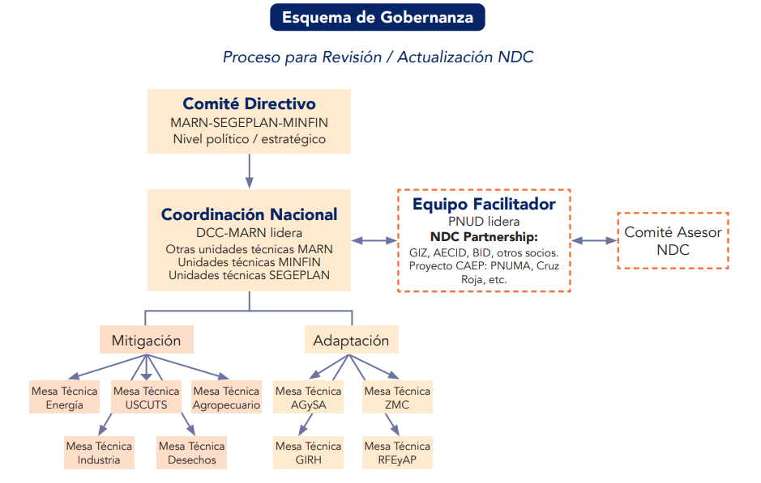
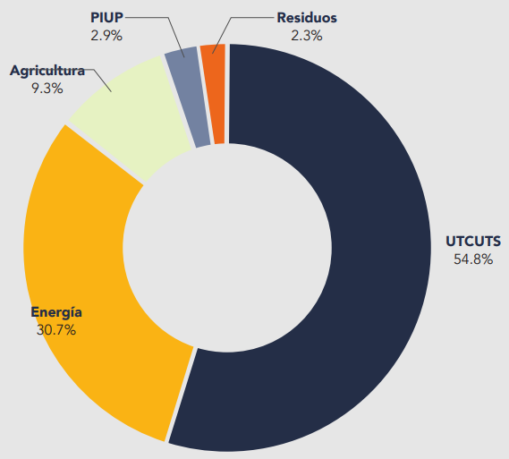
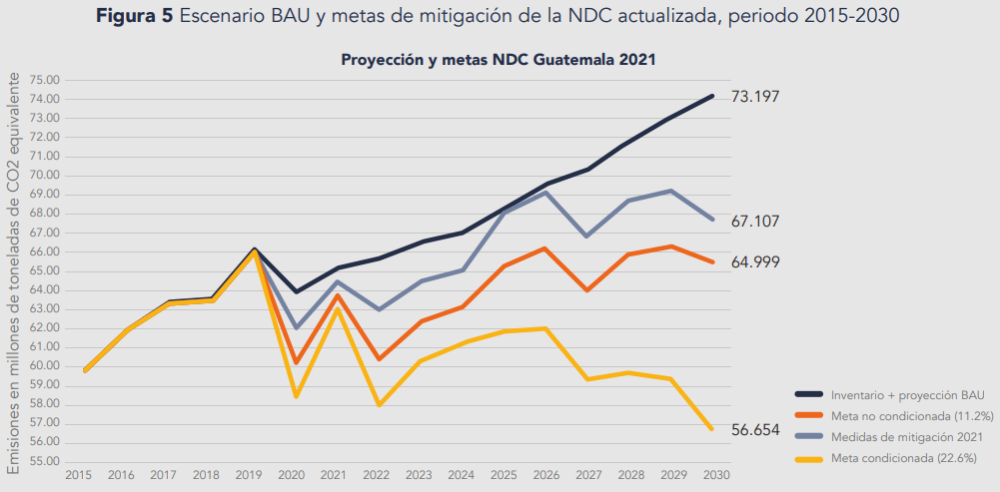
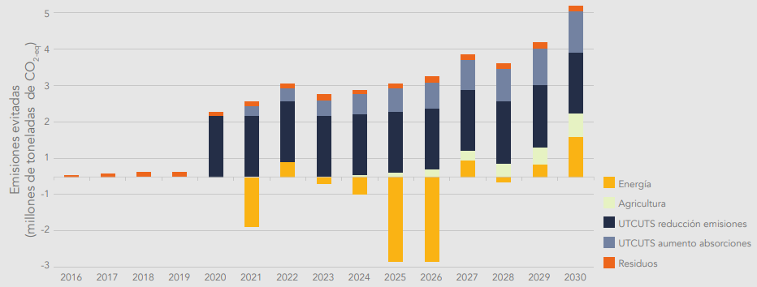
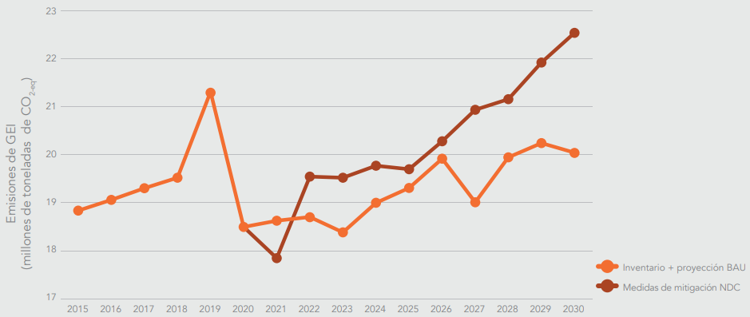
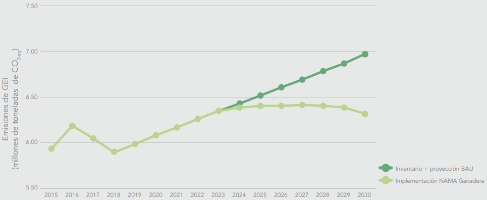

CONTRIBUCION NACIONALMENTE
DETERMINADO GUATEMALA 2021
Mario Roberto Rojas Espino
Ministro de Ambiente y Recursos Naturales
MINISTERIO DE AMBIENTE Y RECURSOS NATURALES
El Gobierno de Guatemala se complace en presentar la Actualización de la Contribución Nacionalmente Determinada (CND, NDC por sus siglas en inglés) de Guatemala 2021, ante la Convención Marco de las Naciones Unidas sobre el Cambio Climático (CMNUCC), en la cual reafirma el compromiso asumido en el Acuerdo de París.
Guatemala es un país multiétnico, pluricultural, multilingüe y megadiverso, con una gran riqueza de recursos naturales y servicios ecosistémicos, esenciales para el equilibrio biológico global, que resguarda vastos conocimientos tradicionales y ancestrales de los pueblos indígenas. El país cuenta con un Sistema Guatemalteco de Áreas Protegidas (SIGAP) el cual representa el 33% del territorio nacional. Siendo un país que aporta un porcentaje muy bajo de emisiones a nivel global, es uno de los países más vulnerables a los efectos del cambio climático a nivel mundial, ha encaminado sus esfuerzos enfocándose principalmente en actualizar su Contribución Nacionalmente Determinada, haciendo referencia a todas aquellas acciones que contribuyan a fortalecer la resiliencia, mejorar la capacidad de adaptación y contribuir a la reducción las emisiones de gases de efecto invernadero para reducir los impactos adversos del cambio climático.
Guatemala se comprometió a fomentar un desarrollo sostenible bajo en emisiones y minimizar las amenazas relacionadas con el cambio climático conforme a sus responsabilidades comunes pero diferenciadas, trabajando con base a las capacidades nacionales para el cumplimiento de los compromisos contemplados en el Plan Nacional de Desarrollo K’atun: nuestra Guatemala 2032 y las Prioridades Nacionales de Desarrollo y los Objetivos de Desarrollo Sostenible (ODS).
El Consejo Nacional de Cambio Climático, establecido en el Art. 8, de la “Ley Marco para regular la reducción de la Vulnerabilidad, la Adaptación obligatoria ante los efectos del cambio climático y la Mitigación de gases de efecto invernadero”, Decreto 7-2013 del Congreso de la República, aprobó el documento de CND, convirtiéndose en un instrumento de prioridad nacional en término de cumplimiento para hacer los esfuerzos necesarios con la finalidad de alcanzar las metas definidas, a nivel nacional e internacional.
Esta Actualización de la CND de Guatemala 2021, ratifica el compromiso del país en cuanto a la reducción de emisiones de gases de efecto invernadero por medio de la implementación de acciones de adaptación y mitigación al cambio climático, además de dar cumplimiento a los compromisos asumidos ante la Convención Marco de las Naciones Unidas sobre el Cambio Climático.
En el ejercicio de mis funciones, es un honor presentar ante la Convención Marco de Naciones Unidas sobre Cambio Climático, en nombre del Gobierno de Guatemala a través del Ministerio de Ambiente y Recursos Naturales, la Actualización de la CND de Guatemala 2021.
Fredy Antonio Chiroy Barreno
Viceministro de Recursos Naturales y Cambio Climático
MINISTERIO DE AMBIENTE Y RECURSOS NATURALES
El cambio climático constituye una de las principales amenazas que enfrenta la humanidad actualmente, amenaza que se encuentra relacionada con las emisiones de gases de efecto invernadero a nivel mundial y de las condiciones de vulnerabilidad propias de cada país.
El Ministerio de Ambiente y Recursos Naturales, como ente rector de la temática ambiental y Punto Focal ante la Convención Marco de Naciones Unidas sobre Cambio Climático, propone estrategias incluyentes y de reactivación mediante la creación de modelos sostenibles para el desarrollo, los cuales permitirán la implementación de planes y estrategias para enfrentar los efectos adversos al cambio climático y enfocar esfuerzos para incrementar la capacidad de adaptación, la vulnerabilidad ; y reducir de las emisiones de GEI, que permiten al país dar cumplimiento con los marcos legales nacionales y compromisos internacionales.
En Guatemala, conscientes de mantener el compromiso en la lucha contra el cambio climático, siendo un tema de prioridad nacional se realizó el proceso de la Actualización de la CND de Guatemala 2021, bajo el liderazgo del Ministro de Ambiente y Recursos Naturales, Mario Roberto Rojas Espino y con la participación de las organizaciones gubernamentales, gobiernos locales, sector privado, academia, pueblos indígenas, sociedad civil y la cooperación internacional, convirtiéndolo en un proceso participativo, incluyente y transparente.
El documento de Actualización CND de Guatemala 2021, se elaboró bajo parámetros metodológicos en concordancia con la actualización de los Inventarios de Gases de Efecto Invernadero presentados en el “Primer Reporte Bienal de Actualización y la Tercera Comunicación Nacional sobre Cambio Climático” con información de emisiones, desde el año 1990-2018, considerando las directrices del año 2006 del Panel Intergubernamental de Cambio Climático y el Marco Reforzado de Transparencia del Acuerdo de París, permitiendo definir metas bajo lineamientos de calidad y proyección estadística de los sectores de mitigación; obteniendo como resultado metas con un mayor grado de transparencia en relación al CDN del 2015.
La Actualización CDN de Guatemala 2021, considera 34 metas para el componente de Adaptación en los sectores de: Agricultura y seguridad alimentaria; Zonas marino-costeras; Recursos forestales, ecosistemas y áreas protegidas; Gestión integrada de los recursos hídricos; Salud humana; e Infraestructura; y 10 metas para el componente de Mitigación en los sectores: Uso de la tierra, cambio de uso de la tierra y silvicultura; Energía; Agricultura; y Residuos. Las metas sectoriales cuentan con responsables institucionales de implementación, y con el apoyo y seguimiento del Ministerio de Ambiente y Recursos Naturales como punto focal nacional.
Con base a lo anterior, los marcos regulatorios jugarán un papel fundamental para una planificación y monitoreo, reporte y verificación eficientes en todos los niveles y sectores, lo que permitirá impulsar acciones que contribuyan al desarrollo bajo en carbono, la reducción de la vulnerabilidad y el mejoramiento de las prácticas de adaptación para mejorar las condiciones de vida de la población guatemalteca.
La Actualización de la CND permitirá crear las sinergias y alianzas estratégicas entre lo público- privado y todos los actores de la sociedad para poder implementar respuestas y planes de acción, los cuales involucren aliados al cumplimiento de compromisos nacionales e internacionales.
Ciriaco Antonio Urrutia Lemus
Director de Cambio Climático
MINISTERIO DE AMBIENTE Y RECURSOS NATURALES
Guatemala, como país miembro y activo dentro de la Convención Marco de las Naciones Unidas sobre el Cambio Climático (CMNUCC), está consciente de los compromisos que se deben asumir para luchar contra los efectos del cambio climático. En su papel como punto focal de Guatemala ante la CMNUCC, el Ministerio de Ambiente y Recursos Naturales (MARN), ha logrado avances significativos en la institucionalización de acciones a nivel nacional.
Guatemala ha realizado importantes aportes a través de la generación de una serie de instrumentos legales, técnicos y de gobernanza fortalecidas a nivel nacional. Ejemplo de ello, se mencionan: la Política Nacional de Cambio Climático (PNCC), Ley Marco para regular la reducción de la Vulnerabilidad, la Adaptación obligatoria ante los efectos del cambio climático y la Mitigación de gases de efecto invernadero, Decreto 7-2013, el Plan de Acción Nacional de Cambio Climático (PANCC), la Estrategia Nacional de Desarrollo con Bajas Emisiones (ENDBE), Ley de Educación Ambiental, Decreto 38-210 y la Política Nacional de Educación Ambiental de Guatemala, debidamente alineadas con el Plan Nacional de Desarrollo: K’atun Nuestra Guatemala 2032, con los Objetivos de Desarrollo Sostenible y con la Política General de Gobierno 2020-2024.
Bajo el liderazgo y coordinación del Ministerio de Ambiente y Recursos Naturales se realizó el proceso de actualización de la CND de Guatemala 2021, principalmente en el establecimiento de los temas de Adaptación, Mitigación y Métrica; así como el fortalecimiento interinstitucional; llevándose a cabo por primera vez, como un proceso nacional participativo multisectorial.
La Contribución Nacionalmente Determinada de Guatemala 2021, se suma a los esfuerzos globales para contribuir con la reducción de emisiones de GEI. En este sentido, el país se comprometió a reducir con recursos propios, el 11.2%; y con el apoyo técnico y financiero de la comunidad internacional, hasta un 22.6% de sus emisiones totales de GEI proyectadas al año 2030, con respecto al año base 2016, año en el que se actualizaron los inventarios nacionales de GEI y reportados en la Tercera Comunicación Nacional de Cambio Climático.
En consecuencia, se encuentra en elaboración el Plan de Implementación de la CND, con el propósito de identificar fuentes de financiamiento y lograr consensos con los diferentes sectores para concretar las nuevas metas y la implementación de los diferentes instrumentos de políticas públicas que contribuyan a aumentar la ambición climática.
Por lo anterior, es importante resaltar los esfuerzos que el Ministerio de Ambiente y Recursos Naturales está realizando para alcanzar esa meta, entre los que destaca la creación de bases de datos, indicadores y metas para consolidar los sistemas de Monitoreo, Evaluación y Reporte (MER) para los sectores de Adaptación y, el Monitoreo, Reporte y Verificación (MRV) para los sectores de Mitigación. Estos esfuerzos permitirán fortalecer el marco reforzado de transparencia inmerso en los reportes a presentar ante la CMNUCC, como el Reporte Bienal de Transparencia (BTR), la Comunicación Nacional de Adaptación, los Reportes de Financiamiento y los Reportes de Avance de implementación de la CND, entre otros.
Alejandro Eduardo Giammattei Falla
Presidente de la República de Guatemala
Mario Roberto Rojas Espino
Ministro de Ambiente y Recursos Naturales
Instituciones líderes de cada sector durante el proceso de actualización de la NDC
Adaptación al cambio climático
Ministerio de Ambiente y Recursos Naturales (Zonas marino-costeras, Gestión Integrada de los recursos hídricos); Ministerio de Agricultura, Ganadería y Alimentación (Agricultura, Ganadería y Seguridad Alimentaria, Gestión integrada de los recursos hídricos); Instituto Nacional de Bosques, Consejo Nacional de Áreas Protegidas (Recursos Forestales, Ecosistemas y Áreas Protegidas; Gestión integrada de los recursos hídricos); Ministerio de Salud Pública y Asistencia Social (Salud humana); Ministerio de Comunicaciones, Infraestructura y Vivienda, Secretaria de Planificación y Programación de la Presidencia (Infraestructura); Secretaría de Seguridad Alimentaria y Nutricional (Agricultura, Ganadería y Seguridad Alimentaria)
Mitigación del cambio climático
Ministerio de Ambiente y Recursos Naturales (Residuos y Procesos industriales); Instituto Nacional de Bosques, Consejo Nacional de Áreas Protegidas (Uso de la tierra, cambio de uso de la tierra y silvicultura); Ministerio de Energía y Minas (Energía); Ministerio de Agricultura, Ganadería y Alimentación (Agropecuario).
La elaboración de la NDC actualizada contó con el apoyo técnico y financiero de: Programa de Naciones Unidas para el Desarrollo (PNUD), la Cooperación Internacional Alemana (GIZ), el Banco Interamericano de Desarrollo (BID) y el World Resources Institute (WRI).
Este documento fue reproducido gracias a la contribución financiera del Programa de Naciones Unidas para el Medio Ambiente (PNUMA) a través del Proyecto Incrementando la Ambición de las Contribuciones Nacionalmente Determinadas y el Financiamiento Climático en Centroamérica y El Caribe NDC-5.
Este documento fue elaborado por el Ministerio de Ambiente y Recursos Naturales, coordinado por el Viceministerio de Recursos Naturales y Cambio Climático a través de la Dirección de Cambio Climático, con el apoyo técnico de los Departamentos de: Adaptación y Vulnerabilidad, Ciencia y Métrica y Mitigación; donde participaron principalmente el personal técnico, con el acompañamiento de consultores provistos por la Cooperación, a través del Proyecto CAEP. La NDC fue presentada al Consejo Nacional de Cambio Climático, quien lo aprobó en reunión del 28 de febrero de 2022.
MARN 2022. Actualizacion de NDC. Ciudad de Guatemala.
Guatemala al ser un país altamente vulnerable ante los impactos del cambio climático, ha encaminado sus esfuerzos a enfocarse principalmente en actualizar su Contribución Nacionalmente Determinada (NDC, por sus siglas en inglés) haciendo referencia a todas aquellas acciones que contribuyan a fortalecer la resiliencia, mejorar la capacidad de adaptación y contribuir a reducir las emisiones de gases de efecto invernadero para enfrentar los efectos adversos del cambio climático.
Guatemala es catalogada entre los primeros lugares de vulnerabilidad a nivel mundial por diferentes organismos que analizan este factor. La situación de alto riesgo en que se encuentra el país responde tanto a su ubicación y factores ambientales, como a las condiciones socioeconómicas. En este sentido, un indicador importante es el Índice de Desarrollo Humano, para el cual Guatemala se ubica en el puesto 126 de 189 países (datos de 2019). Así mismo, las distintas vulnerabilidades a las que se encuentra expuesta la población guatemalteca y el aumento de las amenazas como consecuencia del cambio climático incrementan el riesgo a sufrir inundaciones, deslizamientos y sequías que limitan directamente las condiciones de vida de las personas y el desarrollo del país.
En el país ya se han percibido cambios en las principales variables climáticas. Por ejemplo, se detectó un incremento de 0.8 °C en la temperatura media de los últimos 20 años. Por su parte, se estimó un aumento promedio en la precipitación anual de 122 mm, aunque cabe resaltar que este se distribuye de manera errática, con un aumento en la frecuencia e intensidad de lluvia en algunos días, y periodos más prolongados sin lluvia.
Desafortunadamente, se espera que los cambios en la variabilidad climática continúen. Los escenarios climáticos para finales de siglo proyectan el aumento de la temperatura entre 1º C y 4° C, y la reducción de la precipitación anual entre 500 mm y 1100 mm; con lo que se prevén cambios relevantes para el territorio nacional.
Se estima que alrededor de tres cuartas partes de la población del país vive en áreas de exposición ante amenazas climáticas (inundaciones, sequías y deslizamientos). Como consecuencia, se ha observado un aumento considerable en las pérdidas económicas relacionadas con los eventos hidrometeorológicos extremos: en la última década (2010-2019) se reportaron pérdidas de USD 1320.1 millones, en comparación con USD 147.8 millones reportados en la década de 1940. A futuro, se espera que el impacto económico llegue a representar entre el 2.13 % y 63.63% del producto interno bruto. Los sectores de Agricultura, ganadería y seguridad alimentaria; e Infraestructura son los más afectados por los impactos del cambio climático, además de los recursos hídricos y la diversidad biológica.
En este sentido, Guatemala se está preparando para reducir su vulnerabilidad y continuar con los esfuerzos globales por reducir las emisiones de gases de efecto invernadero (GEI), causantes del cambio climático. En primer lugar y a diferencia de 2015, el país dispone de mejor información sobre su situación ante el cambio climático, tanto en términos de adaptación como con relación a sus avances en mitigación. También se han fortalecido los arreglos institucionales, el marco normativo, políticas, las metodologías validadas por la Convención Marco de las Naciones Unidas sobre Cambio Climático (CMNUCC), y la planificación para el abordaje del cambio climático. De esta cuenta y en cumplimiento con los requerimientos de la CMNUCC, Guatemala ha ratificado su compromiso a través de la actualización de su NDC.
En el proceso de actualización se armonizaron las metas y visión de desarrollo del país, tomando como referencia el Plan Nacional de Desarrollo K’atun: nuestra Guatemala 2032; las Prioridades Nacionales de Desarrollo, que corresponde a un ejercicio para armonizar los ODS; el Plan de Acción Nacional de Cambio Climático (PANCC) y la Estrategia Nacional de Desarrollo con Bajas Emisiones de Gases de Efecto Invernadero. Además, se emplearon los instrumentos de planificación sectorial vinculados al cambio climático.
El esquema de gobernanza para la actualización de la NDC incluyó estructuras de trabajo y decisión, en tres niveles:
Mesas sectoriales: se conformaron por representantes de las instituciones de cada sector, incluyendo al gobierno, academia, entre otros y que sirvieron como la base para la discusión y validación técnica de las propuestas de metas y medidas1.
Comité coordinador y equipo facilitador: liderado por la Dirección de Cambio Climático del Ministerio de Ambiente y Recursos Naturales (MARN) con el acompañamiento estratégico de otras dependencias del MARN, así como de la Secretaría de Planificación y Programación de la Presidencia (SEGEPLAN), del Ministerio de Finanzas Públicas (MINFIN) y el equipo técnico externo que colaboró en el desarrollo del proceso de actualización y en la elaboración del presente documento de la NDC.
Comité directivo: con un rol de dirección estratégica y respaldo político para el proceso. Este fue liderado por el Viceministerio de Recursos Naturales y Cambio Climático del MARN y acompañado por el Subsecretario de Análisis Estratégico del Desarrollo de la SEGEPLAN y el viceministro de Ingresos y Evaluación Fiscal del MINFIN.
El proceso de actualización de la NDC se planificó en siete etapas: 1) planteamiento de propuestas; 2) revisión por parte de los equipos técnicos del gobierno y del comité asesor de la NDC; 3) validación sectorial; 4) elaboración del borrador de la NDC actualizada; 5) validación nacional por medio de un taller de socialización y retroalimentación; 6) aprobación por parte del Consejo Nacional de Cambio Climático (CNCC); y 7) presentación ante la CMNUCC.
La NDC actualizada cuenta con un componente de adaptación que incluye seis sectores, en concordancia con los abordados en el PANCC: 1) Zonas marino- costeras, 2) Agricultura, ganadería y seguridad alimentaria, 3) Recursos forestales, ecosistemas y áreas protegidas, 4) Gestión integrada de recursos hídricos, 5) Salud humana, e 6) Infraestructura.
Para los cuatro primeros se formularon metas concretas de adaptación con base en la planificación nacional de desarrollo y el PANCC. Estos instrumentos se discutieron y validaron con entes rectores de cada sector, además de otros actores relevantes. En el caso de los sectores de Salud humana e Infraestructura, se plantearon únicamente rutas de trabajo para fortalecer las capacidades de las entidades relacionadas con el tema, así como para fortalecer la coordinación entre dichas entidades y el MARN, ya que a la fecha no existe información ni antecedentes de vinculación sectorial con el tema de cambio climático que permitieran establecer metas y responsables. Estas rutas se construyeron de manera participativa con el aporte de representantes del ente rector sectorial y actores relevantes identificados en el proceso (cuadro 1).
Por su parte, la meta porcentual de mitigación estipulada en la NDC formulada en 2015 se mantiene, con el compromiso de reducir el 11.2 % de las emisiones proyectadas para 20302 Esta meta se mantuvo, dado el contexto nacional: a) por la actualización de los inventarios de GEI, los cuales establecieron una nueva línea base; b) el bajo aporte de las emisiones de GEI de Guatemala; c) circunstancias económicas y sociales del país derivadas de la pandemia de COVID-19; y d) el limitado acceso a los fondos internacionales para el cumplimiento de las metas de cambio climático.
No obstante, Guatemala se encuentra comprometido en el cumplimiento de los compromisos internacionales adquiridos, por lo que se plantearon medidas para cuatro de los sectores emisores: 1) Uso de la tierra, cambio de uso de la tierra y silvicultura (UTCUTS); 2) Energía; 3) Agricultura; y 4) Residuos. En esta actualización de la NDC no se incluyó ninguna medida del sector de Procesos industriales y uso de productos, ya que por el momento no se identificaron medidas factibles a ser implementadas en el plazo de la meta. Sin embargo, en los Informes Bienales de Actualización se propone comunicar sobre la implementación de acciones voluntarias de reducción o mitigación de emisiones de este sector.
Es importante recalcar que las medidas para alcanzar esta meta de reducción se ampliarán. Para lograrlo, el MARN y las instituciones sectoriales continuarán el trabajo para establecer otras opciones de la Estrategia Nacional de Desarrollo con Bajas Emisiones de Gases de Efecto Invernadero que puedan implementarse en el periodo estipulado para esta NDC, así también para alcanzar la meta condicionada a la obtención de apoyo externo, que se estableció en 22.6 % de las emisiones proyectadas para el 2030 (cuadro 1).
En la actualización de la NDC se han tomado en cuenta los temas transversales de género, pueblos indígenas y comunidades locales; y financiamiento para la implementación de la NDC. Se promovió la inclusión de consideraciones de género y pueblos indígenas en las metas y medidas que correspondieran, principalmente en aquellas del componente de adaptación. Para ello, se contó con la participación de representantes institucionales de género y de la Mesa Indígena de Cambio Climático, quienes revisaron y brindaron aportes para mejorar las propuestas.
Componente |
Sector |
Meta |
|
ADAPTACIÓN |
Agricultura, ganadería y seguridad alimentaria |
AGS-1 Conservación de suelos AGS-2 Reducción de la desnutrición crónica AGS-3 Sistema de acceso a la información climática AGS-4 Sistemas de riego AGS-5 Prácticas de ganadería sostenible AGS-6 Propuesta de proyecto que atienda el tema de la ganadería sostenible |
|
Zonas marino-costeras |
ZMC-1 Reforestación de ecosistemas de manglar ZMC-2 Ordenamiento pesquero del tiburón ZMC-3.1 Estudios técnicos de nuevas áreas protegidas en la zona marino-costera MC-3.2 Incorporación de áreas protegidas al SIGAP en la zona marino-costera ZMC-4 Índice de salud arrecifal |
|
|
Recursos forestales, ecosistemas y áreas protegidas |
REA-1 Cobertura de bosques REA-2 Degradación por incendios forestales REA-3.1 Restauración forestal REA-3.2 Sistemas agroforestales REA-4 Adaptación basada en Ecosistemas |
|
|
Gestión integrada de los recursos hídricos |
GRH-1 Programas para la gestión integrada del recurso hídrico GRH-2 Planes para la protección del área y para el manejo sostenible GRH-3 Guía para medir la calidad y el caudal GRH-4 Bosques de ribera GRH-5 Sistema de alerta temprana nacional |
|
|
Salud humana |
No hay metas definidas, sino una hoja de ruta |
|
|
Infraestructura |
No hay metas definidas, sino una hoja de ruta |
|
Componente |
Sector |
Meta |
|
|
MTIIGACIÓN |
Uso de la tierra, cambio de uso de la tierra y silvicultura |
Meta no condicionada al apoyo internacional: Al 2030, se ha reducido el 11.2 % de las emisiones de GEI con respecto al escenario tendencial, lo cual conlleva reducir 65 millones de toneladas de CO2-eq Meta condicionada al apoyo internacional: Al 2030 se ha reducido el 22.6 % de las emisiones de GEI con respecto al escenario tendencial, lo cual conlleva reducir 56.6 millones de toneladas de CO2-eq |
UTC-1 Conservación, protección y manejo sostenible de los bosques UTC-2 Reducción de la degradación de los bosques por la prevención y control de incendios UTC-3 Establecimiento de plantaciones forestales UTC-4 Restauración de áreas degradadas |
|
Energía |
ENE-1 Priorizar energía limpia para la generación de energía eléctrica ENE-2 Movilidad sostenible (electro- movilidad y biocombustibles) ENE-3 Cambio en la matriz energética |
||
|
Agricultura |
AGR-1 Estrategia nacional de ganadería bovina sostenible con bajas emisiones |
||
|
Residuos |
RES-1 Captura de metano en el vertedero de la zona 3 y su aprovechamiento para la generación de energía eléctrica RES-2 Proyecto campo limpio |
Como primera tarea de seguimiento y para garantizar el logro de las metas propuestas, se está realizando un análisis de costos y brechas financieras. Además, se ha planificado establecer una ruta de implementación. Se espera que estos insumos se desarrollen durante 2022.
En el caso del componente de adaptación de la NDC actualizada, la validación sectorial se realizó a través de dos rondas de talleres con actores relevantes identificados en conjunto con el MARN y el ente rector de cada sector priorizado. Para el caso del componente de mitigación se realizó una ronda de talleres para tres sectores de mitigación: a) Uso de la tierra, cambio de uso de la tierra y silvicultura (UTCUTS); b) Agricultura; y c) Residuos. El sector de Energía definió sus metas y medidas directamente desde el Ministerio de Energía y Minas (MEM), como ente rector en el tema, con acompañamiento del MARN. Además, se abrió un espacio de diálogo y se sostuvieron tres reuniones de trabajo con el sector privado para ver de qué manera las acciones de adaptación y mitigación del cambio climático que se implementan y que pueden aportar a las metas de la NDC en los diferentes sectores, pueden ser reportadas; se acordó continuar con el diálogo para establecer acuerdos voluntarios con los actores interesados.
1.1 Contexto sobre los compromisos mundiales en torno a la acción climática
Las Contribuciones Nacionalmente Determinadas (NDC, por sus siglas en inglés) son el principal instrumento derivado del Acuerdo de París. En ellas, se manifiestan los compromisos que cada país asume para contribuir al logro de los objetivos de la Convención Marco de las Naciones Unidas sobre Cambio Climático (CMNUCC). Entre estos compromisos se incluyen las metas de reducción de emisiones de gases de efecto invernadero (GEI) y aquellas vinculadas a mejorar la adaptación al cambio climático (CMNUCC, s/f). Asimismo, se deben respetar, promover y tomarán en consideración las obligaciones con respecto a los derechos humanos, pueblos indígenas, comunidades locales, género y empoderamiento de la mujer, personas en cualquier situación de vulnerabilidad, el derecho al desarrollo y la equidad intergeneracional (ONU, 2015).
Resalta, también dentro de los compromisos el principio establecido en el Artículo 3 del texto de la CMNUCC (1992) que establece que:
Las Partes tienen derecho al desarrollo sostenible y deberían promoverlo. Las políticas y medidas para proteger el sistema climático contra el cambio inducido por el ser humano deberían ser apropiadas para las condiciones específicas de cada una de las Partes y estar integradas en los programas nacionales de desarrollo, tomando en cuenta que el crecimiento económico es esencial para la adopción de medidas encaminadas a hacer frente al cambio climático.
Y lo establecido en el Artículo 4 que indica que, para atender los compromisos, las Partes deberán tener en cuenta sus responsabilidades comunes pero diferenciadas y el carácter específico de sus prioridades nacionales y regionales de desarrollo, de sus objetivos y de sus circunstancias.
Para facilitar un marco de directrices que hiciera operativas las NDC, se adoptó el Paquete de Katowice para el Clima. Este contiene una orientación detallada sobre la forma en que deben presentarse las NDC y cómo dar seguimiento a los esfuerzos para mejorar las capacidades nacionales de adaptación. Además, promueve la cooperación internacional y alienta a las partes a aumentar la ambición de sus medidas por el clima a futuro (UNFCCC, 2018).
1.2 Situación de Guatemala en el contexto de cambio climático
El inventario de GEI más reciente (2018) elaborado para el proyecto «Primer Informe Bienal y Tercera Comunicación Nacional de Cambio Climático mostró que las emisiones totales3 fueron de 63.55 millones de toneladas de CO2-eq. Con ello, se evidencia que la contribución de Guatemala a las emisiones de GEI mundiales es muy baja, con tan solo el 0.08 %4, aunque es importante recalcar que la tendencia va en aumento.
A pesar de su baja contribución en emisiones, Guatemala es un país altamente vulnerable a los impactos del cambio climático. Los análisis recopilados para la Tercera Comunicación Nacional sobre Cambio Climático de Guatemala (MARN et al., 2021) mostraron incrementos en la temperatura media de 0.8 °C en el periodo de comparación (2001-2019) con respecto al periodo de referencia (1973-1999). Los cambios más abruptos se observan durante febrero, julio, agosto y septiembre. Por su parte, el régimen de lluvias anuales también ha mostrado un incremento (122 mm). Sin embargo, es importante resaltar que este no se distribuye de manera uniforme, sino que se concentra en periodos cortos al año, provocando que los suelos presenten condiciones de saturación. A su vez, se han incrementado los periodos de ausencia de lluvia, percibiendo el efecto inverso, es decir, mayor cantidad de sequías.
Según los escenarios climáticos para Guatemala, estos efectos podrán agudizarse en las próximas décadas. Por ejemplo, el escenario más conservador indica aumentos en la temperatura media del país de 1 °C y reducciones de 500 mm en la precipitación anual para finales de siglo. Por su parte, el escenario más abrupto prevé incrementos de hasta 4 °C y reducciones de hasta 1100 mm. En general, se espera una disminución generalizada de la precipitación a nivel nacional, pero con lluvias más intensas en periodos más cortos y en áreas específicas (MARN et al., 2021).
Estos cambios en las condiciones climáticas tienen una serie de consecuencias e impactos para el país. Alrededor del 75 % de la población se encuentra expuesta a amenazas climáticas como inundaciones, sequías y deslizamientos. Con ello, también se ven perjudicados los medios de vida y actividades económicas (MARN et al., 2021). Por esta razón, en 2014 el país ocupó la cuarta posición del índice de exposición de la región latinoamericana (Mapplecroft, 2014).
Una evidencia del aumento en las amenazas climáticas se refleja en las pérdidas económicas a causa de los eventos extremos como sequías y eventos ciclónicos, cada vez más frecuentes en el país. En la década de 1940 se estimaban pérdidas de USD 147.8 millones, en comparación con USD 1320.1 millones reportados durante el periodo 2010-2019, es decir que su valor se incrementó en casi doce veces5 . De acuerdo con la evaluación realizada por la Secretaría de Planificación y Programación de la Presidencia (SEGEPLAN), los daños, pérdidas y costos adicionales causados por las depresiones tropicales Eta e Iota ocurridas en el país durante el año 2020, ascienden a aproximadamente Q6,002,035,633 (USD 775.5 millones).
Se estima que el costo acumulado del impacto del cambio climático será especialmente severo para los sectores agrícola y de infraestructura, aunque también afecta en gran medida a los recursos hídricos y la diversidad biológica. En este sentido, se espera que el impacto económico represente entre el 2.13 % y 63.63 % del producto interno bruto (PIB)6, dependiendo del escenario climático y periodo analizado (MARN & SEGEPLAN, 2021).
Con base en los indicadores del índice de riesgo climático global para el periodo 2000-2019, se ubicó a Guatemala en la posición 16 de 180 (Eckstein et al., 2021). A nivel de Mesoamérica, el país se ubica en la primera posición de vulnerabilidad (Mapplecroft, 2014). Esta condición no solo responde a su ubicación y los factores ambientales, sino que se determina, en gran medida, por su vulnerabilidad socioeconómica. Por ejemplo, Guatemala tiene uno de los Índices de Desarrollo Humano (IDH) más bajos del mundo, en el informe 2020 con datos de 2019, obtuvo el puesto 127 de 189 países (UNDP, 2020). El IDH mide principalmente tres dimensiones del desarrollo: la esperanza de vida al nacer, nivel educativo y el ingreso promedio de la población (Informe Nacional de Desarrollo Humano, s/f).
Estas vulnerabilidades socioeconómicas de la población se están exacerbando a causa del cambio climático, de forma que las condiciones de vida y las actividades productivas del país como la agricultura, dotación de agua y la generación de hidroelectricidad. También hay afectaciones a la salud e incremento en la migración por causas climáticas (MARN et al., 2021). Finalmente, se producen pérdidas en la diversidad biológica que aún no se han cuantificado, lo cual hace más difícil la planificación de medidas para evitar su deterioro.
En conclusión, conforme se agudizan los efectos del cambio climático, aumenta el riesgo y se perjudica el desarrollo social y económico de la población guatemalteca. Esta situación se agudiza en la población indígena, ya que sus prácticas productivas, sociales, culturales y económicas se ven altamente perjudicadas (MARN et al., 2021).
1.3 Visión de país con relación al cambio climático
Tal como se describe en el inciso 1.2, las características naturales y situación socioeconómica del país son factores que determinan su alto riesgo ante el cambio climático. Esto se manifiesta en fuertes impactos ambientales y económicos, daños en la infraestructura y pérdidas de vidas humanas, así como afectaciones a la salud y bienestar de la población al verse limitadas las opciones económicas y la dotación de servicios básicos. Por ello, la adaptación se ha convertido en una prioridad para Guatemala por encima de la mitigación, dado su bajo aporte a las emisiones mundiales, como se demuestra más adelante.
Dado que los efectos del cambio climático tienen un mayor impacto en las mujeres, la niñez y los pueblos indígenas (MARN et al., 2021), es de gran importancia para el país que la acción climática se enfoque en reducir el riesgo en las poblaciones más vulnerables. En este sentido, Guatemala reconoce los principios y garantías fundamentales de la Convención establecidos en el Acuerdo de París, particularmente aquellos relacionados al ámbito social: equidad, derechos de los pueblos indígenas, comunidades locales, migrantes, niñez, personas en situaciones vulnerables y el empoderamiento de la mujer (Gobierno de la República de Guatemala, 2021).
Para llevar a cabo los esfuerzos necesarios de adaptación, se requiere de una importante inversión tanto con recursos nacionales, como con el apoyo de los fondos internacionales y mecanismos de financiamiento climático. Estos recursos permitirían realizar intervenciones más concretas y la implementación de las medidas propuestas en las políticas nacionales (CNCC, 2021). Por tal motivo, Guatemala ha solicitado a la CMNUCC que se le reconozca como un país altamente vulnerable, de manera que pueda tener mejor acceso a los apoyos específicos para adaptación ofrecidos a los países en esta categoría (Gobierno de la República de Guatemala, 2021).
Tomando en cuenta su contexto y necesidades, en su participación en la Conferencia de las Partes (COP, por sus siglas en inglés) número 26, Guatemala identificó nueve ejes estratégicos para el abordaje del cambio climático: 1) financiamiento, 2) adaptación, 3) pérdidas y daños, 4) participación en la Red de Santiago; 5) mitigación; 6) transparencia, 7) transferencia de tecnología y fortalecimiento de capacidades, 8) pueblos indígenas y comunidades locales, y 9) género.
Aunque se ha tomado a la adaptación como una prioridad, Guatemala es consecuente con los compromisos para estabilizar las emisiones de GEI mundiales adquiridos con el Acuerdo de París. Por ello, realiza esfuerzos de mitigación, tomando en cuenta el principio de responsabilidades comunes, pero diferenciadas con base en sus circunstancias nacionales.
Como resultado, el país cuenta con varios instrumentos de planificación y de carácter legal, muchos de los cuales se encuentran en fase de implementación. Entre estos resaltan el Plan de Acción Nacional de Cambio Climático (PANCC) y la Estrategia Nacional de Desarrollo con Bajas Emisiones de Gases de Efecto Invernadero. Ambos documentos han servido como base para la actualización de las metas de adaptación y mitigación propuestas por Guatemala en su NDC.
Asimismo, la NDC actualizada tomó como referencia el Plan Nacional de Desarrollo K’atun: nuestra Guatemala 2032. Este resume la Agenda Nacional de Desarrollo en cinco ejes y 10 prioridades, las cuales se desglosan en metas, resultados y lineamientos. Uno de los ejes más relevantes para la formulación de la NDC fue el de «Recursos naturales hoy y para el futuro», ya que plantea directamente prioridades y metas relacionadas al cambio climático, pero también se vincula con las prioridades de otros ejes (CONADUR, 2014).
La NDC actualizada plantea un enfoque integrado en el cual se hace especial énfasis en la adaptación al cambio climático. Sin embargo, este componente no se ve como un tema aislado, sino que se han priorizado aquellas metas que también permitan potencializar las medidas de mitigación y, por ende, existan sinergias entre ambos componentes. Por su parte, se buscó que la mayoría de las medidas de mitigación brinden co-beneficios que contribuyan al desarrollo rural, mejoren la seguridad alimentaria, gestión del riesgo a desastres, creación de empleo y la transición justa.
Finalmente, la NDC actualizada ha tomado como base la equidad, definida como principio rector del Plan Nacional de Desarrollo K’atun: nuestra Guatemala 2032, donde se indica que la incorporación de nociones de sostenibilidad y resiliencia se hace en términos sociales, económicos y ambientales, en un marco de promoción de la equidad social, el respeto a la multiculturalidad y la defensa de los derechos humanos (CONADUR, 2014). Con base en esto, las metas y medidas que se plantean en la NDC se enfocan en promover la equidad entre hombres y mujeres de todas las edades, grupos étnicos y condición socioeconómica.
Estos principios y visión integral plasmados en la NDC buscan fomentar el desarrollo del país de una manera sostenible. Además, son de alta relevancia para Guatemala ya que se armonizan con otros compromisos internacionales a los que se ha sumado el país, tales como: la Agenda 2030; Marco de Sendai sobre el Riesgo a Desastres; Convenio sobre Diversidad Biológica y su Marco Estratégico para la Diversidad Biológica posterior al 2020; la Convención de las Naciones Unidas de Lucha contra la Desertificación; entre otros.
1.4 Marco normativo y político nacional con relación a la NDC
Pese a las condiciones de riesgo ante el cambio climático bajo las cuales se encuentra Guatemala, el país se ha comprometido, desde una etapa muy temprana, a contribuir con la mitigación y adaptación. En este sentido, ha tenido avances en el marco político y de planificación para el abordaje del cambio climático (MARN et al., 2021). Uno de los más relevantes fue la ratificación del Acuerdo de París (Decreto 48-2016, 2016), la cual se presentó ante la CMNUCC el 24 de febrero de 2017, convirtiéndose la INDC en un compromiso adquirido por Guatemala a nivel internacional. Unos años después, se inició el proceso de actualización de la NDC, con lo cual se articularon algunos de estos instrumentos de política que están relacionados con las metas planteadas, como se aclara a continuación (MARN et al., 2021).
Para definir las metas, Guatemala se sustentó en instrumentos como el Plan Nacional de Desarrollo K’atun: nuestra Guatemala 2032 (CONADUR, 2014), los Objetivos de Desarrollo Sostenible (ODS), la Política Nacional de Cambio Climático (MARN, 2009a), la Ley Marco para Regular la Reducción de la Vulnerabilidad, la Adaptación Obligatoria ante los Efectos del Cambio Climático y la Mitigación de Gases de Efecto Invernadero (Decreto 7-2013, 2013 o ley marco de cambio climático), el PANCC (CNCC, 2018), la Estrategia Nacional de Desarrollo con Bajas Emisiones de Gases de Efecto Invernadero (Gobierno de la República de Guatemala, 2018a), la Estrategia Nacional para la Reducción de la Deforestación y Degradación de los Bosques en Guatemala (GCI, 2018a) y la Estrategia Nacional REDD+ (GCI, 2020). El país también ha tomado en consideración instrumentos como los Planes Estratégicos Institucionales que se encontraban disponibles conforme a los sectores vinculados directamente con el cambio climático.
Asimismo, se han utilizado instrumentos en cuanto a la incorporación del tema de género vinculado a cambio climático, tales como: la Política Ambiental de Género (MARN, 2015), la Agenda para la gestión del cambio climático, gestión integral del riesgo y construcción de capacidades con enfoque de equidad e igualdad entre hombres y mujeres (MARN & SEPREM, 2018), la Estrategia para Incorporar Consideraciones de Género en Cambio Climático en Apoyo a la Contribución Nacionalmente Determinada (MARN, 2020), el Manual de inclusión de consideraciones de género en las actividades y proyectos del Fondo Verde para el Clima (MARN, 2018a), entre otros. Estos instrumentos son un ejemplo de los esfuerzos que se han llevado a cabo para realzar el tema de género en el abordaje del cambio climático, y a través de ellos, promover la participación plena y efectiva de las mujeres en programas, proyectos y políticas sobre adaptación y mitigación al cambio climático (MARN et al., 2021).
1.5 Arreglos institucionales para el abordaje del cambio climático
Con relación a la institucionalidad, en Guatemala existen diversas instancias que se vinculan con la generación de políticas públicas y su gestión para la toma de decisiones relativas al cambio climático. El Ministerio de Ambiente y Recursos Naturales (MARN) es la entidad rectora designada para el tema de cambio climático y es también el punto focal político y técnico del país ante la CMNUCC. Algunas entidades gubernamentales como el Instituto Nacional de Bosques (INAB), el Consejo Nacional de Áreas Protegidas (CONAP) y el Ministerio de Agricultura, Ganadería y Alimentación (MAGA), cuentan con unidades específicas destinadas al abordaje del cambio climático y agendas o planes estratégicos institucionales relativos al tema. Aunque el cambio climático se ha incorporado en diversas instituciones que reconocen la necesidad de integrar el tema en sus operaciones, es necesario continuar con este esfuerzo y sumar a otras instancias que tienen alta vinculación en el tema, como el Ministerio de Comunicaciones, Infraestructura y Vivienda (CIV) o el Ministerio de Salud Pública y Asistencia Social (MSPAS) para que incluyan equipos específicos (por ejemplo unidades o direcciones) para abordar la adaptación al cambio climático.
Conforme se ha avanzado en la formulación de políticas públicas e instrumentos legales, también se han creado espacios de coordinación interinstitucional, siendo el más relevante el Consejo Nacional de Cambio Climático (CNCC), el cual constituye una plataforma que incluye a múltiples sectores del país al más alto nivel. Su función es la regulación, supervisión de la implementación de acciones y resolución de conflictos relacionados al Decreto 7-2013 del Congreso de la República (Artículo 8). Además, resaltan el Grupo de Coordinación Interinstitucional (GCI)7, la Mesa Indígena de Cambio Climático de Guatemala (MICCG) y el Sistema Guatemalteco de Ciencias del Cambio Climático (SGCCC)8, entre otras.
Con respecto a la participación, incidencia y toma de decisiones por parte de los pueblos indígenas, la MICCG representa un ejemplo de alto nivel político, ya que forma parte del CNCC. Esta entidad también participa en la plataforma de pueblos indígenas y comunidades locales de la CMNUCC.
Además, se han creado mecanismos para promover el avance en el cumplimiento de las metas del país, tales como el Sistema Nacional de Información sobre Cambio Climático (SNICC, Decreto 7-2013) y el Sistema Nacional de Inventarios de GEI de Guatemala (SNIGT), este último se encuentra en fase de consolidación. Tanto el SNICC, como el subsistema SNIGT representan los principales mecanismos para el reporte ante la CMNUCC. En este sentido, se cuenta con avances recientes en los arreglos institucionales para fortalecer estos sistemas, como la creación de mesas sectoriales de adaptación y mitigación.
2.1 La primera NDC de Guatemala
Guatemala, al igual que muchos otros países, presentó su Contribución Prevista y Determinada a Nivel Nacional (INDC, por sus siglas en inglés) en 2015 (Gobierno de la República de Guatemala, 2015). Este instrumento se convirtió en la NDC al ser ratificado el Acuerdo de París por el Congreso de la República de Guatemala. Para el planteamiento de los compromisos se propusieron metas ambiciosas de reducción de las emisiones del país a 2030, a pesar de que los datos disponibles en ese momento indicaban que Guatemala contribuía con menos del 0.08 % de las emisiones mundiales (Gobierno de la República de Guatemala, 2015).
Las metas de mitigación establecidas son de cobertura nacional y se enfocan en la reducción de los tres principales GEI emitidos: dióxido de carbono (CO2), metano (CH4) y óxido nitroso (N2O). Los sectores que se identificaron como emisores fueron Energía, UTCUTS, Agricultura, Desechos9 y Procesos industriales. En la figura 1 se resumen las metas, tomando en cuenta los recursos propios del país (meta no condicionada) y con apoyo de la cooperación internacional (condicionada).
Adaptado de Gobierno de la República de Guatemala (2015).
Además de las metas de mitigación, se identificó que era de alta relevancia el desarrollo de un componente para la adaptación. Para ello, se estableció la meta de reducir de forma transversal la vulnerabilidad y promover el mejoramiento de los procesos de adaptación en sectores clave (Gobierno de la República de Guatemala, 2015):
Salud humana,
Zonas marino-costeras,
Agricultura, ganadería y seguridad alimentaria,
Recursos forestales, áreas protegidas;
Conservación y gestión de ecosistemas estratégicos,
Infraestructura,
Gestión integrada de los recursos hídricos,
Calidad de la infraestructura productiva,
Protección del suelo y
Gestión integral de reducción de riesgos de desastres
Aunque la NDC 2015 propone metas de mitigación, y otra muy general para adaptación en donde se enumeran los sectores relacionados, estas no especifican las medidas que implementará para alcanzarlas ni describe los protocolos para el monitoreo y evaluación. Durante el desarrollo de la actualización se planteó mejorar estos temas a través de un proceso de consulta y un proceso metodológico más específico, que se presenta a continuación.
2.2 Proceso de actualización de la NDC y avances en su implementación
Para dar mayor claridad en las metas, el primer paso que se realizó para la formulación de la NDC actualizada fue una revisión de la información disponible sobre el estado de implementación de las medidas de mitigación y adaptación relacionadas con las metas planteadas en la NDC de 2015. Este proceso implicó la consulta con diferentes actores vinculados a las medidas identificadas.
Otro paso importante fue la generación de información que serviría como insumo para la actualización de la NDC. En este sentido, se actualizaron los inventarios nacionales de GEI, los cuales sirven como la base para las proyecciones de las emisiones y evaluación de opciones de mitigación para alcanzar las metas propuestas. Estos inventarios se publicaron en la Tercera Comunicación Nacional sobre Cambio Climático de Guatemala (3CNCC) (MARN et al., 2021)10 y el Primer Informe Bienal de Actualización de Guatemala (1IBA)11. Además de los inventarios, se utilizaron los insumos ofrecidos en la Estrategia Nacional de Desarrollo con Bajas Emisiones de Gases de Efecto Invernadero (Gobierno de la República de Guatemala, 2018a), los cuales sirvieron como punto de partida para la priorización de opciones de mitigación.
En el caso del componente de adaptación, se hizo un ejercicio de priorización de los sectores tomando como base la NDC de 2015 y el PANCC; así como los insumos del análisis y priorización de sectores y medidas de adaptación, llevado a cabo por UICN y el Banco Mundial en vistas a la actualización de la NDC (Banco Mundial et al., 2020). Tras la revisión de esta documentación, se acordaron los sectores que se incluyeron en la actualización.
Este proceso de revisión y actualización de la NDC se inició en noviembre de 2020, para lo cual se definió una ruta de trabajo. Este proceso contó con el apoyo de cooperantes y la participación comprometida de las instituciones rectoras de los sectores priorizados. Luego, se estableció la gobernanza del proceso de actualización, conformando un equipo de coordinación y desarrollo del documento de la NDC actualizada. Este incluyó equipos de diálogo y toma de decisión en tres niveles (figura 2):
Mesas sectoriales: son la base para la discusión y aval de las propuestas de metas y medidas. Estas se dividen en los componentes de adaptación y mitigación y cuentan con la participación de los principales actores de gobierno, sociedad civil, pueblos indígenas, sector privado, academia, entre otros. Las mesas ya han figurado en procesos anteriores como la actualización del PANCC, el diseño de la Estrategia Nacional de Desarrollo con Bajas Emisiones de Gases de Efecto Invernadero, y los inventarios nacionales de GEI.
Comité coordinador y equipo facilitador: la coordinación fue liderada por el MARN, a través de la Dirección de Cambio Climático, pero también participaron otras dependencias del MARN y otras instancias de gobierno que tienen la rectoría de los sectores priorizados, además de representantes técnicos de la Secretaría de Planificación y Programación de la Presidencia (SEGEPLAN) y del Ministerio de Finanzas Públicas (MINFIN). Por su parte, el equipo facilitador corresponde a un grupo técnico que desarrolló el proceso de actualización de la NDC y la elaboración del documento resultante. Este fue liderado por el Programa de las Naciones Unidas para el Desarrollo (PNUD) y tuvo colaboración directa de la Agencia Alemana para la Cooperación Internacional (GIZ, por sus siglas en alemán), la Universidad del Valle de Guatemala (UVG) y el Banco Interamericano de Desarrollo (BID). A su vez, contó con la colaboración técnica de otros socios como el Programa de las Naciones Unidas para el Medio Ambiente (PNUMA) y Cruz Roja, a través del NDC Partnership. A este nivel también se contó con el Comité asesor de la NDC, conformado por profesionales de reconocida trayectoria y amplia experiencia en cambio climático y temáticas relacionadas, quienes fueron invitados por el MARN para apoyar en el proceso ad honorem, aportando insumos técnicos y orientación política y estratégica durante todo el proceso.
Comité directivo: este fue conformado por el Viceministerio de Recursos Naturales y Cambio Climático del MARN como líder, el Subsecretaría de Análisis Estratégico del Desarrollo de la SEGEPLAN y el Viceministerio de Ingresos y Evaluación Fiscal del MINFIN. Su función fue brindar la dirección estratégica y respaldo político al proceso de actualización de la NDC. De esta forma, se encargó de dar el aval al más alto nivel.

La ruta de trabajo para la actualización de la NDC (proceso técnico) consistió en cinco etapas (algunas paralelas), que se diferenciaron por el tipo de tareas que se ejecutaban en cada una y los actores involucrados (figura 3):
Planteamiento de propuestas: esta etapa conformó la identificación y análisis de la información disponible que permitió la revisión y el planteamiento de propuestas de metas y medidas.
Revisión por parte de los equipos técnicos del gobierno y el comité asesor de la NDC: las propuestas planteadas en la primera etapa fueron revisadas por ambos equipos, con lo cual se brindaron insumos para mejorar las propuestas.
Validación sectorial: las propuestas de metas y medidas revisadas se presentaron en las mesas sectoriales para su revisión, retroalimentación y validación.

Borrador de la NDC: con la información validada en la etapa anterior, se escribió y consolidó el documento que conforma la actualización de la NDC e incluye las metas y medidas propuestas. Este se revisó nuevamente (inciso b).
Validación nacional: el documento afinado gracias a los insumos de los equipos técnicos y asesores se socializó y validó con actores a nivel nacional, que incluyeron las mesas técnicas, además de actores relevantes vinculados al cambio climático en Guatemala.
Debido a las restricciones y medidas precautorias por la pandemia de COVID-19, los talleres y reuniones durante el proceso fueron a través de plataformas virtuales.
Una vez agotado el proceso técnico, el documento validado se trasladó al MARN y el comité directivo, quienes buscaron el aval al más alto nivel: la Presidencia de la República. En este proceso también se dio a conocer al CNCC.
Las circunstancias propias de cada país respecto al cambio climático están determinadas por condiciones biofísicas, sociales, políticas y económicas. Estas, en su mayoría, tienen vinculación con las personas y la forma en que se manejan los recursos disponibles.
Guatemala es un país con diversidad de culturas que convergen en su territorio, donde casi la mitad de la población (43.6 %) se autoidentifica como uno de los tres pueblos indígenas: maya, xinca o garífuna (INE, 2019). Consciente de ello y del respeto de los derechos humanos de todos los grupos que conforman la sociedad, el país ha asumido compromisos en ese sentido, siendo signatario de los principales instrumentos referentes a los derechos humanos y a los pueblos indígenas. Como consecuencia, ha formulado instrumentos políticos y normativos específicos para implementar algunos de estos compromisos.
Por su parte, en Guatemala se presenta un reto importante, ya que los pueblos indígenas, población rural y las mujeres se encuentran en una situación de rezago y exclusión. Esta situación se refleja en los índices de pobreza y acceso a los servicios básicos, por mencionar algunos ejemplos (inciso 1.2).
Por este motivo, en el proceso de actualización de la NDC se integraron consideraciones para asegurar la participación efectiva de estos grupos en la toma de decisiones y en la distribución de beneficios de la acción climática. Para ello, se tomaron como base los principales instrumentos del marco legal y de planificación en esta materia y se promovió la participación de las personas encargadas de abordar estos temas a nivel institucional. De esta cuenta, en la formulación de metas y medidas (principalmente en el componente de adaptación) se buscó que los beneficios de su implementación sean igual de accesibles para toda la población. Estos temas se abordan en las fichas descriptivas de las metas de adaptación y las medidas de mitigación donde aplican.
Por su parte, la reducción de GEI supone cambios que brindan oportunidades, pero que también implican costos. Estos cambios en el modelo de desarrollo tienen consecuencias en los medios de vida, oportunidades de empleo y las condiciones laborales por lo que se requiere de una transición justa (OIT, 2018).
Para lograr una implementación efectiva de las medidas y acciones identificadas en esta NDC, es necesario tener claros los costos y las fuentes de financiamiento que podrán invertirse para cubrirlos, además de identificar los apoyos necesarios para mejorar la ambición. Este análisis es parte del proceso de actualización y mejora de la NDC.
A continuación, se describe cómo estos temas transversales se han abordado de manera general durante el proceso de actualización.
3.1 Género
Para el abordaje de consideraciones de género en el proceso de actualización de la NDC se utilizó como instrumento principal la Estrategia para Incorporar Consideraciones de Género en Cambio Climático en Apoyo a la Contribución Nacionalmente Determinada (MARN, 2020).
Luego, se identificaron las consideraciones de género pertinentes a las metas y medidas propuestas. Estas se revisaron con representantes de las oficinas de género de las instancias rectoras para asegurar tres aspectos: 1) que su planteamiento sea el adecuado; 2) que las opciones planteadas contribuyan a reducir las condiciones de vulnerabilidad de las mujeres ante el cambio climático y 3) que las mujeres se beneficien de la implementación de dichas medidas. El proceso de revisión consistió en enviar las propuestas vía electrónica para recibir comentarios e insumos, y una reunión virtual para discutir sobre las medidas y acordar la mejor manera de reflejar las consideraciones de género.
3.2 Pueblos indígenas y comunidades locales
Al igual que para género, las metas de adaptación al cambio climático se formularon incluyendo consideraciones para poblaciones vulnerables como la población indígena y las comunidades locales o rurales. Las propuestas de metas fueron revisadas y retroalimentadas en una reunión con la MICCG, considerando que esta es una plataforma representativa de los pueblos indígenas de Guatemala y vinculada al cambio climático.
3.3 Transición justa
Para dar seguimiento al proceso de actualización de la NDC que se presentará en 2022, la Organización Internacional del Trabajo (OIT) y el MARN realizarán un análisis de las metas y medidas propuestas para identificar oportunidades que aseguren que los cambios previstos por su implementación se realicen en el marco de una transición justa. De esta manera, se procurará que las condiciones laborales, beneficios y derechos de los trabajadores no se vean limitados como consecuencia de implementar estas medidas.
3.4 Financiamiento para la implementación de la NDC
Como complemento a la actualización de la NDC, se está realizando un análisis de los costos y brechas de financiamiento para implementar las medidas de adaptación y mitigación en cumplimiento a las metas de la NDC.
Este análisis identificará las necesidades de financiamiento para cada medida y también sugerirá fuentes financieras disponibles. Este será un insumo muy relevante para establecer la ruta de implementación de la NDC actualizada.
El país ya cuenta con algunos estudios financieros vinculados a cambio climático, tales como el Análisis del Financiamiento Climático en Guatemala (MARN, 2019)12 y tres estudios realizados por la Iniciativa de Finanzas para la Biodiversidad (BIOFIN) sobre el gasto público y privado en materia de cambio climático en Guatemala (PNUD, 2018a, 2018b). Estos insumos servirán como base para el análisis de financiamiento específico para la NDC actualizada.
Dada la vulnerabilidad de Guatemala ante los impactos del cambio climático, la adaptación es un componente prioritario para el país. Tal como se mencionó en el inciso 2.1, la meta de adaptación establecida en la NDC de 2015 es «la reducción transversal de la vulnerabilidad y mejoramiento de los procesos de adaptación en sectores clave» (Gobierno de la República de Guatemala, 2015, p. 8).
Dada la generalidad de esta meta y que aún no se contaba con un sistema de Monitoreo, Evaluación y Reporte (MER), fue imposible determinar de manera sistemática los avances en su implementación. Sin embargo, se reconoce que un avance importante para sentar estas bases fue la formulación del PANCC (CNCC, 2016) y su actualización (CNCC, 2018). Este instrumento reúne propuestas de medidas e indicadores enfocados en seis sectores.
Con el proceso de actualización de la NDC aumentó la ambición nacional para alcanzar la adaptación al cambio climático, por lo cual se desarrollaron metas sectoriales medibles y reportables. Para cada meta se analizó la línea base y se designaron a las entidades responsables de su implementación. Este es un avance significativo ya que se permite el monitoreo y transparencia en la implementación y la comunicación de los avances.
Muchas de las medidas de adaptación incluidas en las metas de la NDC actualizada producirán importantes beneficios que, además de promover la resiliencia al cambio climático a largo plazo, contribuirán directamente al desarrollo rural, a mejorar la seguridad alimentaria y la gestión del riesgo de desastres; y a la creación de empleo y la transición justa. A su vez, tienen importantes sinergias con la mitigación, ya que podrán contribuir en reducir las emisiones de GEI del país.
4.1 Sectores prioritarios para establecer las metas de adaptación
La NDC de 2015 identificó 10 sectores prioritarios para la adaptación (Gobierno de la República de Guatemala, 2015) (inciso 2.1). Posteriormente, con la formulación del PANCC (CNCC, 2018) se priorizaron seis de estos sectores. Más recientemente, se realizó un ejercicio participativo de priorización de sectores y medidas de adaptación para apoyar la implementación de la NDC en Guatemala (Banco Mundial et al., 2020), en el cual se eligieron los sectores de Agricultura, ganadería y seguridad alimentaria; Zonas marino-costeras; y Recursos forestales y áreas protegidas y el tema de Gestión del riesgo y vulnerabilidad como tema transversal. Tomando en cuenta estos ejercicios, el MARN definió seis sectores de importancia prioritaria en la formulación de las metas de adaptación de la actualización de la NDC:
Agricultura y seguridad alimentaria,
Zonas marino-costeras,
Recursos forestales, ecosistemas y áreas protegidas,
Gestión integrada de los recursos hídricos,
Salud humana e
Infraestructura
En los primeros cuatro sectores se definieron metas con impacto en la adaptación al cambio climático, considerando sinergias intersectoriales, así como con las metas y medidas de mitigación del cambio climático.
Por su parte, considerando que los avances para implementar medidas de adaptación al cambio climático son aún incipientes en los sectores de Salud humana e Infraestructura, no fue posible formular metas con impacto directo en la adaptación. Sin embargo, se realizaron cinco talleres con actores clave de estos sectores para avanzar con el abordaje de estos temas. El primero tuvo como objetivo iniciar un diálogo interinstitucional, crear un lenguaje común con relación al cambio climático e identificar actores interesados. Posteriormente, se llevaron a cabo dos sesiones de trabajo con cada sector por separado para desarrollar una hoja de ruta, la cual servirá para la inclusión del componente de adaptación al cambio climático en la planificación de los entes rectores.
4.2 Proceso metodológico para la definición de metas del componente de adaptación
El primer paso empleado para la actualización del componente de adaptación de la NDC fue un ejercicio de identificación de actores clave y de sus roles. Para ello, se tomó como base el análisis realizado para la Tercera Comunicación Nacional sobre Cambio Climático de Guatemala y el PANCC, además de los actores establecidos por el Decreto 7-2013 del Congreso de la República. Por su parte, las instituciones líderes de los diferentes sectores contribuyeron proponiendo otros actores de relevancia, entre los cuales se incluyeron organizaciones de pueblos indígenas, cámaras y gremiales, fundaciones para el desarrollo y organizaciones locales.
Gracias a este ejercicio, se pudo realizar el proceso de actualización de forma participativa. La amplia participación por parte de las entidades gubernamentales al lado de representantes de organizaciones no gubernamentales, la cooperación internacional, sector privado, academia y de la sociedad civil garantizó la colaboración intersectorial, la transparencia y, por ende, la apropiación de las metas planteadas.
El siguiente paso fue la revisión y análisis de información nacional y sectorial orientado a determinar las prioridades de adaptación que el país ha definido en diferentes instrumentos. Para ello, se analizaron documentos de planificación nacionales; estudios y documentos recientes sobre los impactos del cambio climático en el país y la región; trabajos previos concebidos como insumos para la actualización de la NDC y documentos elaborados por otros países de Latinoamérica para sus procesos de actualización de metas. Es importante mencionar que no se pudo incluir el análisis de vulnerabilidad a nivel nacional y departamental, así como los planes departamentales de adaptación, ya que estos se encontraban en proceso de elaboración y su publicación estaba prevista posterior a la definición de metas para la actualización de la NDC.
Además de la revisión bibliográfica, se realizaron entrevistas con actores relevantes.
Las metas se formularon siguiendo las recomendaciones planteadas en el documento Mejorar las NDC: una guía para fortalecer los planes climáticos nacionales en 2020 (WRI & PNUD, 2020), en el cual se sugiere analizar los vínculos de la NDC con otros procesos de planificación del país. En este caso, se utilizó el PANCC, la Tercera Comunicación Nacional sobre Cambio Climático, el Plan Nacional de Desarrollo K’atun: Nuestra Guatemala 2032, la Estrategia para
Incorporar Consideraciones de Género en Cambio Climático en Apoyo a la Contribución Nacionalmente Determinada (MARN, 2020) y los ODS, así como otros instrumentos de planificación sectorial.
Para vincular el impacto de la NDC actualizada con los ODS se formularon las metas de forma que contribuyeran con el alcance de más de un objetivo. Evidentemente, se consideraron aquellas acciones urgentes para combatir el cambio climático y sus efectos (ODS 13), pero también se buscó que aportaran a los temas de seguridad alimentaria y agricultura sostenible (ODS 2); igualdad entre los géneros (ODS 5); garantizar la disponibilidad de agua y su gestión sostenible (ODS 6); infraestructuras resilientes (ODS 9); garantizar modalidades de consumo y producción sostenible (ODS 12); conservar y utilizar los océanos, los mares y los recursos marinos para el desarrollo sostenible (ODS 14); y para gestionar los bosques de forma sostenible, luchar contra la desertificación, detener e invertir la degradación de las tierras y detener la pérdida de la diversidad biológica (ODS 15).
Se buscó que las metas planteadas promuevan la resolución de brechas y vacíos del país, ya sea actualizando o añadiendo información y otros insumos sobre (WRI & PNUD, 2020):
Tendencias, impactos y vulnerabilidad.
Planificación actual y a corto plazo.
Planificación sobre métodos de los sistemas MER.
Objetivos nacionales a largo plazo.
Temas de género y multiculturalidad.
Para cada meta se estableció el 2021 como año de inicio de implementación de las medidas para todos los sectores identificados. Para ello, se emplearon insumos clave: el anexo estadístico de la revisión de las Prioridades Nacionales de Desarrollo (SEGEPLAN, 2019); la información generada por el Instituto Nacional de Estadística (INE), datos proporcionados por los entes rectores de cada sector de adaptación y los propios sistemas MER de los sectores Agricultura, ganadería y seguridad alimentaria, y Zonas marino-costeras.
Para la formulación de metas, se consideraron varios criterios que permitirán el monitoreo y evaluación:
Disponibilidad de información de libre acceso y oficial o proveniente de organismos reconocidos.
Existencia de una línea base publicada.
Posibilidad de realizar reportes periódicos.
Posibilidad de llevar a cabo acciones sinérgicas entre sectores y las medidas de mitigación priorizadas.
Factibilidad política, técnica y financiera para su implementación durante el periodo de vigencia de la NDC.
Las propuestas de metas se revisaron y validaron en dos talleres virtuales por sector. Además, se realizaron dos talleres adicionales para la incorporación de consideraciones de género y pueblos indígenas, para lo cual se trabajó con las especialistas de género del MARN, MAGA, CONAP e INAB y con la MICCG.
4.3 Metas sectoriales estipuladas para la actualización de la NDC
En el cuadro 2 se muestra un resumen de las metas propuestas por sector. Luego, se describen los aspectos más relevantes de estas metas, como su alcance e instituciones involucradas en la implementación de medidas para alcanzar cada meta13.
|
Sector |
Código |
Meta |
|
Agricultura, ganadería y seguridad alimentaria |
AGS-1 |
Al 2025 se han implementado medidas de conservación de suelos en 19 500 hectáreas adicionales a las existentes en la línea base de 2020 |
|
AGS-2 |
Para el 2024 se ha disminuido la prevalencia de desnutrición crónica en la niñez menor de cinco años en 7.00 puntos porcentuales, con una reducción de 1.75 % anual |
|
|
AGS-3 |
Al 2025 se ha implementado y fortalecido un sistema de acceso a la información climática que difunde los datos generados por las Mesas Técnicas Agroclimáticas, por medio de boletines y una aplicación que facilite la actualización de la información climática a todas las personas y entidades usuarias |
|
|
AGS-4 |
Al 2025 se incrementa la superficie agrícola bajo sistemas de riego en al menos 4500 hectáreas |
|
|
AGS-5 |
Al 2025, al menos 600 productores del departamento de Petén implementan mejores prácticas de ganadería sostenible en 13 500 hectáreas. Entre estas se incluyen sistemas silvopastoriles, protección de suelo, recuperación de pasturas, conservación de remanentes boscosos, entre otros |
|
|
AGS-6 |
Al 2025, Guatemala presenta al menos una propuesta de proyecto que atienda el tema de la ganadería sostenible a los fondos internacionales para el financiamiento climático |
|
|
Zonas marino-costeras |
ZMC-1 |
Al 2025 se restauran y reforestan al menos 1500 hectáreas de ecosistemas de manglar, con la participación plena de las comunidades locales, pueblos indígenas y garífunas, grupos de mujeres y juventud |
|
ZMC-2 |
Al 2025 s logra el ordenamiento pesquero con enfoque ecosistémico en al menos una de las principales pesquerías del país, la de tiburón. Esta meta abarca tanto el nivel industrial como artesanal, e incluye la participación de hombres, mujeres, jóvenes y comunidades locales |
|
|
ZMC-3.1 |
Al 2025, el CONAP ha aprobado los estudios técnicos de al menos dos (2) nuevas áreas protegidas en la zona marino-costera del Pacífico para incorporar al Sistema Guatemalteco de Áreas Protegidas (SIGAP). Los estudios técnicos contarán con la participación y conocimiento de mujeres, hombres y comunidades locales y tendrán un enfoque que permita garantizar sus medios de vida |
|
|
ZMC-3.2 |
Al 2025 se ha incorporado al menos una (1) nueva área protegida al SIGAP en la zona marino-costera del Pacífico. Este proceso se habrá socializado con mujeres, hombres y las comunidades locales |
|
|
ZMC-4 |
Al 2025, el índice de salud arrecifal (ISA) de Guatemala se mantiene al mismo nivel que el de la línea base de 2020 |
|
|
Recursos forestales, ecosistemas y áreas protegidas |
REA-1 |
Al 2025, el 32 % del territorio nacional (3 479 124 ha) se encuentra cubierto por bosques y al menos un 30 % de los bosques bajo manejo es atendido por mujeres indígenas y no indígenas |
|
REA-2 |
ara 2025, la tasa de degradación por incendios forestales se reducirá a 36 972 hectáreas anuales, lo cual constituye una mejora del 5 % con respecto a la tasa de la línea base. Se mejorará la prevención de los incendios forestales al abordar estrategias relacionadas con los problemas coyunturales desde la perspectiva social. La superficie afectada por incendios forestales no excederá el límite de 20 000 hectáreas en promedio por año para el periodo 2021-2025 |
|
|
REA-3 |
Al 2025, se ha incrementado en 30 300 hectáreas la restauración forestal y superficie bajo manejo a través de las modalidades de «plantaciones forestales», «sistemas agroforestales» y «restauración de tierras forestales degradadas» de los programas de incentivos forestales PROBOSQUE (26 900 hectáreas) y PINPEP (3400 hectáreas) |
|
|
REA-3.1 |
(submeta) Incrementar en 10 659 hectáreas la superficie bajo la modalidad de «sistemas agroforestales» de los programas de incentivos forestales PROBOSQUE (7587 hectáreas) y PINPEP (3072 hectáreas) |
|
|
REA-4 |
Al 2025 se integrará el enfoque de Adaptación basada en Ecosistemas (AbE) en los instrumentos estratégicos institucionales de las entidades gubernamentales rectoras como el MAGA, MARN, CONAP e INAB |
|
|
Gestión integrada de recursos hídricos |
GRH-1 |
Al 2025, en al menos el 35 % de las cuencas, subcuencas y microcuencas del país se han implementado programas, planes, estrategias y manuales técnicos para la gestión integrada del recurso hídrico a nivel del territorio, respetando su gobernanza, con enfoque de género y pertinencia cultural |
|
GRH-2 |
Al 2025, el 50 % de las cuencas y de los sitios estratégicos de importancia hidrológica cuentan con planes para la protección del área y para el manejo sostenible. Estos planes tienen un enfoque de cuencas hidrográficas y de ordenamiento territorial con pertinencia cultural y enfoque de género, de acuerdo con el contexto social |
|
|
GRH-3 |
Al 2025, las 38 cuencas hidrográficas del país cuentan con una guía para medir la calidad y el caudal, y permitan el reporte sobre su estado. El 10 % de las cuencas cuentan con índices de calidad de agua y de caudal |
|
|
GRH-4 |
En el 2025 habrá más de 3000 ha de bosques de ribera restaurados |
|
|
GRH-5 |
Al 2025, se habrá iniciado con la creación de un sistema de alerta temprana nacional. Para ello, se realizará un mapeo completo de todos los sistemas existentes y en proceso de implementación, el cual servirá de insumo para su integración a nivel nacional |
|
|
Salud humana |
NA |
|
|
No se definieron metas, sino una hoja de ruta |
||
|
Infraestructura |
NA |
|
|
No se definieron metas, sino una hoja de ruta |
Notas: NA = No aplica.
4.3.1 Agricultura, ganadería y seguridad alimentaria
Las actividades agropecuarias tienen una alta vulnerabilidad al cambio climático, ya que se ven particularmente afectadas por la ocurrencia de sequías e inundaciones y los cambios en la temperatura. Estos impactos tienen consecuencias determinantes en la seguridad alimentaria (CNCC, 2018; MARN et al., 2021).
Además, este es un sector con una alta relevancia para los pueblos indígenas y comunidades locales. Por ello, se consideró prioritario incluir metas que reconozcan y respeten sus conocimientos y prácticas tradicionales.
Para este sector se formularon seis metas. El principal responsable de su implementación, monitoreo y reporte es el MAGA, por tratarse del ente rector del sector. Solamente la meta AGS-2 es responsabilidad de la Secretaría de Seguridad Alimentaria y Nutricional de la Presidencia de la República (SESAN), entidad que coordina el Sistema de Seguridad Alimentaria y Nutricional y el Sistema de Información, Monitoreo y Alerta de la Inseguridad Alimentaria y Nutricional (SESAN, 2006).
Meta AGS-1. Al 2025 se han implementado medidas de conservación de suelos en 19 500 hectáreas adicionales a las existentes en la línea base de 2020.
Esta meta toma en cuenta principalmente acciones que implementará el MAGA dentro de sus programas para la conservación de suelos y también una contribución de la Fundación Defensores de la Naturaleza en la Reserva de Biósfera Sierra de las Minas. En estas áreas se promoverán acciones teniendo en cuenta las prácticas tradicionales de las poblaciones indígenas en los territorios, con relación al uso y manejo del suelo.
Con las acciones para alcanzar esta meta, se espera incrementar la productividad agrícola, mejorando la capacidad de respuesta y resiliencia de las familias, contribuyendo con la seguridad alimentaria (MAGA et al., 2019). Los suelos conservados reducen el riesgo de impactos por eventos climáticos extremos recurrentes, como sequías e inundaciones (CNCC, 2018; MAGA et al., 2019).
Si el país realiza los estudios necesarios para recabar información para establecer una línea base de carbono en suelos, esta meta podría hacer sinergia con mitigación, para la cual podría establecerse una meta específica a futuro.
Meta AGS-2. Para el 2024 se ha disminuido la prevalencia de desnutrición crónica en la niñez menor de cinco años en 7.00 puntos porcentuales, con una reducción de 1.75 % anual.
Para alcanzar esta meta se deben implementar medidas que permitan el acceso y disponibilidad de alimentos, de forma que se reduzca la vulnerabilidad de los hogares y comunidades, especialmente la población rural e indígena que viven en extrema pobreza (CNCC, 2018). Para el periodo de vigencia de la NDC actualizada, el Gobierno tiene la ejecución de la Gran Cruzada Nacional por la Nutrición, cuya meta es reducir entre cinco y siete por ciento el índice de desnutrición del país (Gobierno de la República de Guatemala, s/f).
Esta meta tiene una temporalidad hasta el año 2024, debido a que de esta manera la tiene planificada la Secretaría de Seguridad Alimentaria y Nutricional (SESAN), ente rector sectorial. Dependiendo de la actualización de la planificación del sector, podrá proyectarse otra meta para los siguientes años.
Meta AGS-3. Al 2025 se ha implementado y fortalecido un sistema de acceso a la información climática que difunde los datos generados por las Mesas Técnicas Agroclimáticas, por medio de boletines y una aplicación que facilite la actualización de la información climática a todas las personas y entidades usuarias.
Esta meta se consideró dada la importancia del acceso a la información climática para fortalecer la resiliencia de los sistemas de producción agropecuaria (MAGA et al., 2019). Con ello, se estipula crear mecanismos que faciliten el acceso de la población rural y los pueblos indígenas a esta información, considerando los idiomas locales.
Actualmente se cuenta con 19 Mesas Técnicas Agroclimáticas (MTA), distribuidas en casi todo el país14. Estas son una iniciativa del Instituto Nacional de Sismología, Vulcanología, Meteorología e Hidrología de Guatemala (INSIVUMEH) y MAGA, y cuentan con el apoyo de proyectos de cooperación. El diálogo que se ha generado en las mesas ha permitido una mejor coordinación para la generación y recopilación de información climática a nivel local. Como resultado, se elabora un boletín agroclimático con la predicción climática, posibles impactos en los cultivos y recomendaciones. En el marco de la NDC, se espera completar la cobertura de las Mesas a todos los departamentos, así como establecer mecanismos para hacer la información accesible a todos los productores agrícolas de la región.
Meta AGS-4. Al 2025 se incrementa la superficie agrícola bajo sistemas de riego en al menos 4500 hectáreas.
Esta meta se implementará en las áreas consideradas dentro de la Política Nacional de Riego15, además de las áreas consideradas dentro de otros proyectos del MAGA.
Meta AGS-5. Al 2025, al menos 600 productores del departamento de Petén implementan mejores prácticas de ganadería sostenible en 13 500 hectáreas. Entre estas se incluyen sistemas silvopastoriles, protección de suelo, recuperación de pasturas, conservación de remanentes boscosos, entre otros.
La importancia de esta meta radica en que los sistemas de riego incrementan la capacidad de respuesta a sequías y cambios en los patrones de lluvia, ayudando así a proveer seguridad alimentaria a las familias de pequeños y medianos productores (MAGA et al., 2019).
Meta AGS-6. Al 2025, Guatemala presenta al menos una propuesta de proyecto que atienda el tema de la ganadería sostenible a los fondos internacionales para el financiamiento climático.
Se formularon las metas AGS-5 y AGS-6 considerando que la implementación de mejores prácticas de ganadería sostenible incrementa la productividad pecuaria y la capacidad de respuesta y resiliencia de los productores (MAGA et al., 2019). Además, estas medidas tienen beneficios para la mitigación, ya que reducen la presión sobre el bosque natural y evitan las emisiones de GEI causadas por la deforestación.
El cumplimiento de estas metas podría suponer un impacto considerable, dado que la ganadería fue responsable del 35 % de la deforestación en el país para el periodo 2001-2013. Las áreas donde existió mayor ocurrencia fueron el Parque Nacional Laguna del Tigre y la de Zona de Amortiguamiento de la Reserva de la Biosfera Maya (RBM) en Petén, y el Refugio de Vida Silvestre Punta de Manabique, en Izabal (GCI, 2018b).
Ambas metas tienen sinergia directa con la medida de mitigación AGR-1 Estrategia nacional de ganadería bovina sostenible con bajas emisiones.
4.3.2 Zonas marino-costeras
Las zonas marino-costeras de Guatemala se ubican entre los límites de la Zona económica exclusiva16 y un límite terrestre que abarca los ecosistemas de agua dulce influidos por las mareas, entre los cuales se consideran los tres kilómetros que se reserva el Estado de Guatemala (MARN, 2009b). Los principales ecosistemas en estas zonas constituyen las aguas marinas, estuarios, pastos marinos, arrecifes de coral, bosques secos, manglares y playas. Estos son estratégicos para el desarrollo socioeconómico del país, dada la abundancia de bienes y servicios ambientales que brindan y por ofrecer una barrera de protección frente a los eventos climáticos extremos (CNCC, 2018).
Según el Grupo Intergubernamental de Expertos sobre Cambio Climático (IPCC, 2021), las principales afectaciones que sufren las zonas marino-costeras a causa del cambio climático son el aumento de la temperatura superficial del mar, la acidificación de los océanos y el aumento del nivel del mar. Además, los eventos extremos provocan el aumento en la altura de las olas y en la frecuencia de las marejadas de fondo que provocan inundaciones de las zonas urbanas y agrícolas, así como la salinización de pozos y el colapso de redes de infraestructura (CNCC, 2018; MARN et al., 2020).
Una de las ventajas de este sector es que cuenta con un mecanismo de gobernanza liderado por la Mesa Técnica para la Gestión Integrada Marino-Costera de Guatemala (Acuerdo ministerial 154- 2019, 2019). Esta instancia se encarga de asesorar la temática del manejo y uso sostenible de los ecosistemas marino-costeros y sus servicios ambientales, además de coordinar acciones en función de la implementación de la Política para el Manejo Integral de las Zonas Marino-Costeras de Guatemala (MARN, 2009b)17. La Mesa también cumple un papel clave, al revisar y avalar la información que alimenta los indicadores del MER y la NDC.
Meta ZMC-1. Al 2025 se restauran y reforestan al menos 1500 hectáreas de ecosistemas de manglar, con la participación plena de las comunidades locales, pueblos indígenas y garífunas, grupos de mujeres y juventud.
Para este sector se formularon cuatro metas, las cuales se describen a continuación.
Esta meta se formuló dada la vulnerabilidad del ecosistema de mangle, relacionada con las dinámicas y las condiciones sociales y económicas que causan su deforestación y cambios en el uso del suelo. Con la restauración de este ecosistema se incrementa la capacidad adaptativa de las zonas marino-costeras, ya que se recupera la barrera natural que protege a la costa y comunidades de vientos, inundaciones y otros eventos climáticos extremos (MARN et al., 2020). A su vez, se contribuye a mantener el hábitat y refugio de la diversidad biológica de peces, crustáceos, aves y reptiles. Como consecuencia, se fortalecen los medios de vida de las personas que dependen de estas especies. En especial la pesca, que además contribuye a mejorar la seguridad alimentaria y el turismo.
Esta meta tiene sinergias con el componente de mitigación al incrementar las reservas de carbono forestal y el potencial de carbono azul. Los ecosistemas costeros como el mangle y los pastos marinos son sitios clave, ya que fijan y almacenan más carbono por unidad de área que los ecosistemas terrestres (Herr & Landis, 2016).
Esta meta es implementada por diversos actores de la sociedad civil, gobiernos locales y el gobierno central, bajo la coordinación y responsabilidad de reporte del INAB. En este sentido, el INAB otorga los incentivos forestales. Además, es la entidad designada como secretaría técnica de la Mesa Nacional de Restauración del Paisaje Forestal y la Mesa de Restauración de la Costa Sur. Asimismo, recopila, sistematiza y reporta los avances del país en cuanto a la restauración y reforestación del ecosistema de manglar.
Meta ZMC-2. Al 2025 se logra el ordenamiento pesquero con enfoque ecosistémico en al menos una de las principales pesquerías del país, la de tiburón. Esta meta abarca tanto el nivel industrial como artesanal, e incluye la participación de hombres, mujeres, jóvenes y comunidades locales.
El ordenamiento pesquero con enfoque ecosistémico contemplado en esta meta incluye la formulación y uso de instrumentos normativos, acuerdos y plataformas de gobernanza; el reporte de información; la implementación de licencias de pesca; y la zonificación y establecimiento de vedas temporales. Con su implementación, se reducirá la sensibilidad al cambio climático al ordenar el uso de la diversidad biológica marino-costera. Por ende, se aseguraría el mantenimiento de las oportunidades de medios de vida y opciones de diversificación, así como el funcionamiento y la salud de los ecosistemas costeros (MARN et al., 2020).
La meta ZMC-2 es implementada por la sociedad civil y el gobierno central. El MAGA es el responsable de su reporte, al ser el ente rector del recurso hidrobiológico. Además, se apoya del CONAP en esta tarea.
Meta ZMC-3.2 Al 2025 se ha incorporado al menos una (1) nueva área protegida al SIGAP en la zona marino-costera del Pacífico. Este proceso se habrá socializado con mujeres, hombres y las comunidades locales.
Meta ZMC-3.1 Al 2025, el CONAP ha aprobado los estudios técnicos de al menos dos (2) nuevas áreas protegidas en la zona marino-costera del Pacífico para incorporar al Sistema Guatemalteco de Áreas Protegidas (SIGAP). Los estudios técnicos contarán con la participación y conocimiento de mujeres, hombres y comunidades locales y tendrán un enfoque que permita garantizar sus medios de vida.
Esta meta se dividió en dos, ya que el proceso de declaratoria de áreas protegidas en Guatemala incluye dos fases. La primera corresponde a la aprobación del estudio técnico por parte del ente rector, y la segunda, a la declaración por medio de decreto legislativo, a cargo del Congreso de la República.
En la línea base (2020), la extensión de las áreas protegidas costeras abarca tan solo el 5.8 % del SIGAP, lo cual es insuficiente para conservar la representatividad ecosistémica de esta zona (CNCC, 2018). Al ampliar la cobertura de estos ecosistemas en el SIGAP se puede incrementar la capacidad adaptativa, al promover el manejo sostenible y gestión de la diversidad biológica (MARN et al., 2020). También se garantiza la conservación de ecosistemas estratégicos como el manglar, que sirve como barrera natural para proteger a las comunidades de los eventos extremos que inciden en las mareas. A su vez, se contribuye a mantener el hábitat y refugio de alto número de especies, así como los medios de vida asociados de las personas que viven a los alrededores.
Meta ZMC-4. Al 2025, el índice de salud arrecifal (ISA) de Guatemala se mantiene al mismo nivel que el de la línea base de 2020.
Ambas submetas son implementadas por el CONAP, el Congreso de la República y la sociedad civil. En ambos casos, la entidad responsable de reporte y calidad es el CONAP, por ser el ente rector de las áreas protegidas y la diversidad biológica del país.
El ISA es un índice que permite conocer el estado de salud del arrecife. Toma en cuenta cuatro indicadores: 1) cobertura de coral rocoso vivo, 2) cobertura de macroalgas carnosas, 3) biomasa de peces herbívoros y 4) biomasa de peces de importancia comercial. La calificación va de 1 (crítica) a 5 (muy buena) (Williamson Cuthbert et al., 2019). En el caso de Guatemala, el valor del ISA en 2020 fue de 2.0 (McField et al., 2020).
Con la implementación de medidas en seguimiento a la meta ZMC- 4 se pretende incrementar la capacidad adaptativa, al mantener la salud de un ecosistema fundamental para el equilibrio de las costas. Un factor determinante para esto es el promover el manejo sostenible y gestión de la diversidad biológica que además de mantener el hábitat, garantiza la continuidad de los medios de vida relacionados, como la pesca y el turismo (MARN et al., 2020).
Cabe resaltar que, con la implementación de estas medidas, se esperan cambios positivos en los arrecifes de coral. Sin embargo, por tratarse de un ecosistema altamente amenazado por las actividades humanas y afectado también por los efectos del cambio climático, no se plantea una mejora en el ISA en un periodo tan corto, sino al menos mantenerlo. Por otra parte, la recuperación de la salud del arrecife es un proceso que abarca más tiempo que el horizonte temporal de las metas de la NDC actualizada.
Esta meta es implementada por el gobierno central, a través de CONAP y la Dirección de Normatividad de la Pesca y Acuicultura del MAGA (DIPESCA), además de la sociedad civil (organizaciones no gubernamentales que trabajan en la zona marino-costera) y la academia. El responsable del reporte y calidad es Healthy Reefs for Healthy People Initiative.
4.3.3 Recursos forestales, ecosistemas y áreas protegidas
Los bosques cumplen un rol crítico en la estabilización del clima, debido su capacidad de absorción de carbono y su participación en el ciclo del agua (FAO & FILAC, 2021). Los bosques tropicales, como los de Guatemala, son además uno de los ecosistemas terrestres más importantes para la diversidad biológica mundial (Myers, 1988). Sin embargo, son ecosistemas muy vulnerables. Una de sus amenazas principales es la deforestación. Las razones de fondo tienen que ver con la presión que ejerce la población a estos ecosistemas. Por ejemplo, las actividades agrícolas como la ganadería extensiva y la agricultura de mediana y gran escala (monocultivos), que son la principal causa de deforestación (GCI, 2020); los incendios forestales, ocasionados principalmente por quemas agrícolas mal controladas; las plagas y enfermedades; el consumo insostenible de leña; la tala ilegal; las usurpaciones e ilícitos por el narcotráfico; entre otros (CNCC, 2018).
Para solventar estos problemas y propiciar la adaptación al cambio climático a nivel del país es indispensable implementar medidas para conservar los recursos forestales, otros ecosistemas bajo amenaza y áreas protegidas, así como la restauración de áreas degradadas. Por ello, se plantearon cuatro metas para este sector.
Meta REA-1: Al 2025, el 32 % del territorio nacional (3 479 124 ha) se encuentra cubierto por bosques y al menos un 30 % de los bosques bajo manejo es atendido por mujeres indígenas y no indígenas.
Para la línea base de esta meta se utilizó la cobertura forestal del 2016, establecida a través de la malla de puntos de muestreo de Collect Earth (GIMBUT, 2019).
El logro de esta meta constituye una base importante para la conservación de la diversidad biológica, esencial en un país «megadiverso»18 como Guatemala. Además, contribuirá a incrementar la resiliencia al cambio climático, al regular el microclima local, y al ayudar a conservar los suelos y recursos hídricos.
Esta meta también brinda importantes sinergias con el componente de mitigación, gracias a la disminución de emisiones de GEI a causa de la reducción en la deforestación y a la captura de carbono, que se reflejará en el aumento de absorciones del país.
Las entidades que se encargarán de la implementación de esta meta serán del gobierno (a través del CONAP, INAB y MAGA), así como las organizaciones no gubernamentales, municipalidades, comunidades indígenas y locales, autoridades indígenas y el sector privado. Las responsables del reporte son CONAP (dentro de áreas protegidas) e INAB (fuera de áreas protegidas). El MARN será el responsable del control de la calidad.
Meta REA-2: Para 2025, la tasa de degradación por incendios forestales se reducirá a 36 972 hectáreas anuales, lo cual constituye una mejora del 5 % con respecto a la tasa de la línea base. Se mejorará la prevención de los incendios forestales al abordar estrategias relacionadas con los problemas coyunturales desde la perspectiva social. La superficie afectada por incendios forestales no excederá el límite de 20 000 hectáreas en promedio por año para el periodo 2021-2025.
Para la definición de esta meta se tomaron como base los datos oficiales sobre la tasa de incendios forestales disponibles en el país para el periodo 2001-2020 (CONRED, 2020) y un informe sobre cicatrices de fuego de 2006-2016 (GIMBUT, 2022).
La relevancia de esta meta radica en que, al mejorar la gestión de los incendios, se reducen las amenazas a la diversidad biológica en los bosques, incrementando al mismo tiempo la resiliencia a los impactos del cambio climático de los ecosistemas y de las comunidades locales.
En sinergia con la meta REA-1, es de suma importancia monitorear las áreas quemadas y prevenir cambios en el uso del suelo, como el establecimiento de cultivos o áreas de pastoreo.
Las entidades que se encargarán de la implementación de esta meta son la Coordinadora Nacional para la Reducción de Desastres (CONRED), INAB, CONAP, y MARN, las municipalidades y comunidades indígenas y locales. La entidad responsable del reporte es CONRED y el CONAP será el responsable del control de la calidad.
Meta REA-3: Al 2025, se ha incrementado en 30 300 hectáreas la restauración forestal y superficie bajo manejo a través de las modalidades de «plantaciones forestales», «sistemas agroforestales» y «restauración de tierras forestales degradadas» de los programas de incentivos forestales PROBOSQUE (26 900 hectáreas) y PINPEP (3400 hectáreas).
Submeta REA-3.1: Incrementar en 10 659 hectáreas la superficie bajo la modalidad de «sistemas agroforestales» de los programas de incentivos forestales PROBOSQUE (7587 hectáreas) y PINPEP (3072 hectáreas).
Las entidades que se encargarán de la implementación de esta meta serán el INAB, CONAP, MAGA y MARN, así como organizaciones no gubernamentales, municipalidades, organizaciones comunitarias y el sector privado. Las responsables del reporte son el INAB, CONAP y el MAGA. El MARN será el responsable del control de la calidad.
Meta REA-4: Al 2025 se integrará el enfoque de Adaptación basada en Ecosistemas (AbE) en los instrumentos estratégicos institucionales de las entidades gubernamentales rectoras como el MAGA, MARN, CONAP e INAB.
Con el cumplimiento de esta meta también se apoya a los objetivos del país en el componente de mitigación, al incrementar la capacidad de captura de carbono de las áreas agrícolas.
La AbE es un concepto clave para incrementar la resiliencia al cambio climático y la seguridad alimentaria, ya que considera el establecimiento de sistemas productivos sostenibles, la conservación de la diversidad biológica y la gestión integrada de los recursos hídricos. Es incluyente y participativa, ya que toma en cuenta las prácticas tradicionales de los pueblos indígenas y comunidades locales, y propicia la participación de la juventud y las mujeres (Girardin et al., 2021; Seddon et al., 2020).
Con el cumplimiento de esta meta se permitirá impulsar acciones que usen los servicios ecosistémicos para incrementar la resiliencia de la población y del paisaje.
Las entidades que se encargarán de la implementación de esta meta serán el INAB, CONAP, MARN, MAGA y la SEGEPLAN. El MARN y SEGEPLAN se encargarán del reporte. El MARN será el responsable del control de la calidad.
4.3.4 Gestión integrada de los recursos hídricos
El cambio climático provoca variaciones en la cantidad e intensidad de los fenómenos hidrometeorológicos, lo cual afecta la calidad y cantidad de agua, poniendo en peligro una gestión correcta del recurso hídrico (CNCC, 2018).
El impacto más notorio se refleja en los escenarios de disponibilidad hídrica, en los cuales se prevé la disminución de la disponibilidad de agua para consumo humano y actividades productivas. Abordar este sector constituye un reto importante para el país, ya que la institucionalidad en torno al manejo de los recursos hídricos se encuentra dispersa en varias entidades gubernamentales, lo cual dificulta su gestión integrada. Además, el país no cuenta con una normativa unificada e integral del recurso.
Para solventar estas barreras, es necesario implementar medidas enfocadas en mejorar la gestión integral de las cuencas hidrográficas y los recursos hídricos. Para ello, se han definido cinco metas.
Meta GRH-1: Al 2025, en al menos el 35 % de las cuencas, subcuencas y microcuencas del país se han implementado programas, planes, estrategias y manuales técnicos para la gestión integrada del recurso hídrico a nivel del territorio, respetando su gobernanza, con enfoque de género y pertinencia cultural.
La importancia de esta meta radica en que la gestión integrada del recurso hídrico contribuye a la conservación de suelos, al incremento de los recursos hídricos en áreas rurales y urbanas, al incremento de la resiliencia a los impactos del cambio climático y a la gestión del riesgo a desastres (Acuerdo gubernativo 19-2021, 2021).
Esta meta también aporta sinergias al componente de mitigación, gracias al potencial desarrollo de energía hidroeléctrica y consiguiente disminución de las emisiones de GEI, además de potenciales disminuciones de emisiones de metano de las cuencas.
Las entidades que se encargarán de la implementación de esta meta serán el MARN, SEGEPLAN, las autoridades de cuenca y el MAGA, así como las mancomunidades. El responsable del reporte será el MARN, a través del Viceministerio de Agua. La SEGEPLAN será responsable del control de la calidad.
Meta GRH-2: Al 2025, el 50 % de las cuencas y de los sitios estratégicos de importancia hidrológica cuentan con planes para la protección del área y para el manejo sostenible. Estos planes tienen un enfoque de cuencas hidrográficas y de ordenamiento territorial con pertinencia cultural y enfoque de género, de acuerdo con el contexto social.
Los sitios estratégicos considerados en esta meta corresponden a aquellas áreas donde es vital establecer modelos de gobernanza dada su cercanía a las áreas agropecuarias, zonas de recarga hídrica o con fuentes de agua potable y cuencas que influyen directamente en la zona marino-costera.
El contar con los planes para la protección de estos sitios estratégicos permitirá la vinculación con otras metas relacionadas con los incentivos forestales para el manejo sostenible de estas áreas de suma importancia por el recurso hídrico (INAB, 2017). En estos planes se incluirán las medidas efectuadas actualmente por las mesas técnicas existentes en ciertas regiones del país.
Las entidades que se encargarán de la implementación de esta meta serán del gobierno (a través de las autoridades de cuenca, CONAP, INAB, MARN, MAGA y SEGEPLAN), así como las municipalidades (a través de las oficinas municipales de agua y saneamiento), el CONADUR, los consejos departamentales y municipales de desarrollo y Consejos Regionales de Desarrollo Urbano y Rural (COREDUR). Las entidades responsables del reporte son las autoridades de cuenca. El MARN será el responsable del control de la calidad.
Meta GRH-3: Al 2025, las 38 cuencas hidrográficas del país cuentan con una guía para medir la calidad y el caudal, y permitan el reporte sobre su estado. El 10 % de las cuencas cuentan con índices de calidad de agua y de caudal.
El país está haciendo esfuerzos importantes en el monitoreo de la calidad y cantidad del agua (Acuerdo gubernativo 236-2006, 2006; Acuerdo gubernativo 73-2021, 2021). Sin embargo, es necesario armonizar la información existente e integrarla a una plataforma nacional que permita sistematizar la información recabada en los reportes de gestión ambiental de entidades con licencias ambientales aprobadas. En este sentido, se tiene estipulado que la información contenida en las guías y los índices existentes se subirán a un repositorio nacional que generará contenido para el público.
La implementación de esta meta constituye un paso fundamental para establecer las condiciones para el cumplimento de un inventario de agua y para conformar los índices a emplear en las cuencas con estándares internacionales (Acuerdo gubernativo 73- 2021, 2021).
Las entidades que se encargarán de la implementación de esta meta serán del gobierno (a través del MARN, SEGEPLAN, MAGA, MSPAS e INSIVUMEH), así como las instituciones académicas, municipalidades y el sector privado (incluyendo a la Asociación Nacional del Café -Anacafé). La entidad responsable del reporte es el MARN. El MSPAS será el responsable del control de la calidad.
Meta GRH-4: En el 2025 habrá más de 3000 ha de bosques de ribera restaurados.
Los bosques de ribera, también conocidos como bosques de galería, son ecosistemas que habitan los márgenes de los ríos, humedales y otros ecosistemas acuáticos de agua dulce. Son sitios clave tanto para los ríos y ecosistemas acuáticos, como para los ecosistemas terrestres adyacentes, ya que ofrecen múltiples servicios ecosistémicos. Por ejemplo, ayudan a la conservación del suelo y disminución de la erosión, proveen refugio a la diversidad biológica del área, entre otros (CNCC, 2018; Oldén et al., 2019; Yirigui et al., 2019). Directamente en materia de adaptación al cambio climático, la restauración de estos ecosistemas ofrece enormes beneficios de adaptación para incrementar la resistencia contra inundaciones y otros eventos extremos (MARN et al., 2021).
La extensión territorial considerada en esta meta abarca la implementación de técnicas de restauración en sitios piloto para lograr la meta nacional contemplada en el PANCC prevista para 2050 (CNCC, 2018). Esta meta también es sinérgica con el componente de mitigación, ya que con su implementación se incrementará la captura de carbono y, por tanto, aumentarán las absorciones del país.
Las entidades que se encargarán de la implementación de esta meta serán el MARN, INAB, CONAP y MAGA; así como las instituciones académicas, municipalidades, el sector privado y las organizaciones de pueblos indígenas y comunidades locales. Las entidades responsables del reporte son INAB y CONAP. El MARN será el responsable del control de la calidad.
Meta GRH-5: Al 2025, se habrá iniciado con la creación de un sistema de alerta temprana nacional. Para ello, se realizará un mapeo completo de todos los sistemas existentes y en proceso de implementación, el cual servirá de insumo para su integración a nivel nacional.
Los sistemas de alerta temprana constituyen una medida efectiva para la adaptación a los eventos extremos, como sequías, inundaciones, olas de calor, entre otros (Gobierno de la República de Guatemala, 2015). Para su funcionamiento, se requiere la aplicación de cuatro elementos clave como medidas que los gobiernos nacionales, las organizaciones comunitarias y los asociados de los distintos sectores e intersectoriales deben utilizar como referencia: a) conocimiento del riesgo, b) monitoreo y seguimiento, c) difusión y d) comunicación y la capacidad de respuesta. La armonización centralizada a nivel nacional de los sistemas de alerta temprana locales permitirá organizar respuestas coordinadas.
La entidad que coordinará la implementación de esta meta será la CONRED, quien se apoyará del INSIVUMEH, MAGA y la SESAN; así como de las instituciones de investigación (la Universidad del Valle de Guatemala -UVG-, la Universidad de San Carlos de Guatemala -USAC-, el Instituto de Investigación y Proyección sobre Ambiente Natural y Sociedad de la Universidad Rafael Landívar - Iarna URL- y el Instituto Privado de investigación sobre Cambio Climático -ICC), la Alianza por el Agua y las mesas técnicas agroclimáticas. Cada una de estas instituciones realizará acciones dentro de su competencia y especialidades para desarrollar los cuatro elementos de los sistemas de alerta temprana. La entidad encargada del reporte es el MAGA.
4.3.5 Salud humana
En la Tercera Comunicación Nacional sobre Cambio Climático (MARN et al., 2021) se identificaron varios riesgos para la salud derivados del cambio climático. Se considera que algunas causas de morbilidad y mortalidad en el país pueden verse exacerbadas con los cambios previstos en algunos determinantes ambientales. Por ejemplo, las enfermedades transmitidas por vectores como la malaria, dengue, chikunguña, zika, la enfermedad de Chagas y la leishmaniasis; enfermedades zoonóticas, como la rabia y la leptospirosis; enfermedades de la piel; enfermedades cardiovasculares, entre otras (CNCC, 2018). Por ello, es necesario formular políticas de adaptación al cambio climático que establezcan los lineamientos necesarios para reducir la vulnerabilidad de la salud humana ante estos impactos.
Como se mencionó en el inciso 4.1, para este sector no fue posible establecer metas concretas como en el caso de otros. Sin embargo, se estableció una hoja de ruta con líneas de trabajo que permitirá agotar pasos previos para incorporar al sector en la siguiente actualización de la NDC. Para ello, se definieron seis líneas de trabajo, con un horizonte de implementación de dos años:
Mejorar la coordinación interna en el MSPAS. Logro: al 2023, el MSPAS tiene una coordinación clara y eficiente de las actividades relacionadas con la reducción de los impactos del cambio climático en el sector de la Salud humana.
Mejorar la coordinación interinstitucional. Logro: al 2023, se incorporan acciones relativas al cambio climático en el plan estratégico institucional del MSPAS.
Mesa técnica intersectorial. Logro: al 2023 se ha establecido una mesa técnica sectorial aprobada por el MARN y MSPAS. Esta constituirá un espacio de diálogo para planificar acciones conjuntas, presentar ideas y establecer planes de trabajo que puedan fortalecer la adaptación al cambio climático en el sector.
Establecimiento de fuentes de financiamiento. Logro: al 2023, se han enviado a revisión para obtener financiamiento al menos dos proyectos en torno a la adaptación al cambio climático en el sector.
Fortalecimiento de capacidades técnicas. Logro: al 2023, al menos el 50 % del personal clave de las instituciones está capacitado y sensibilizado en temas de cambio climático.
Fortalecimiento de la investigación. Logro: al 2023, se han definido claramente las prioridades de investigación sobre los impactos del cambio climático en el sector de salud y los resultados de las primeras investigaciones están socializados con la población.
Los eventos hidrometeorológicos extremos, además del costo en pérdidas humanas, han provocado daños y pérdidas de infraestructura fundamental para el funcionamiento del país, como escuelas, carreteras, puentes, sistemas de saneamiento básico, infraestructura de transmisión y distribución de energía, entre otros.
Entre las principales necesidades del sector de Infraestructura se encuentran: fortalecer los procesos de comunicación y coordinación entre las entidades del gobierno para poder desarrollar proyectos, metas e indicadores; identificar vacíos de información; establecer y aplicar estándares de diseño y construcción que consideren el cambio climático; implementar medidas para la gestión de riesgo y reducción de la vulnerabilidad; y consolidar los planes de ordenamiento territorial.
Al igual que para el sector de Salud humana, no se contaba con suficiente información y capacidades institucionales vinculadas al cambio climático para poder establecer metas. A mediano plazo, se espera que el CIV desarrolle un plan estratégico institucional de reducción de la vulnerabilidad, adaptación y mitigación al cambio climático y que adopte estándares de diseño y construcción de obra física que tomen en cuenta la variabilidad y el cambio climático, dando cumplimiento al inciso «e» del Artículo 15 del Decreto 7-2013 del Congreso de la República.
A corto plazo, la hoja de ruta se enfoca en iniciar el diálogo y crear las condiciones habilitadoras para incorporar al sector en la NDC. Para ello, se definieron siete líneas de trabajo para su implementación al 2023. Estas estarán a cargo de del CIV como ente rector sectorial y el MARN como ente rector en cambio climático:
Comunicación interinstitucional. Logro: se cuenta con una mesa de diálogo conformada por las instituciones relacionadas con el sector, la cual se reunirá de forma cuatrimestral. Para ello, se contará con el nombramiento del contacto técnico y político de cada institución. Esta mesa contará como mínimo con representantes del CIV, la Asociación Nacional de Municipalidades de la República de Guatemala (ANAM) y el MARN. Entre las funciones de la mesa se encontrará elaborar y presentar un plan de acción del sector en función del cambio climático.
Normativa de planificación de desarrollo territorial e infraestructura sostenible y resiliente. Logro: se cuenta con una propuesta para la SEGEPLAN, municipalidades y la ANAM para incorporar lineamientos en el proceso de actualización de los planes de ordenamiento y desarrollo territorial con la inclusión de un eje de adaptación al cambio climático y resiliencia.
Divulgación y promoción de la relevancia del cambio climático en el sector de Infraestructura. Debido a que existe poco conocimiento sobre el tema es necesario comunicar a los actores del sector y público en general sobre la importancia de incorporar el tema de la vulnerabilidad al cambio climático y consideraciones de adaptación en el proceso de planificación de infraestructura. Logro: se cuenta con un plan de divulgación y promoción.
Fortalecimiento de capacidades técnicas. El CIV, los actores del sector y gobiernos locales requieren apoyo técnico para fortalecer sus capacidades sobre cambio climático, infraestructura verde y soluciones basadas en la naturaleza, entre otros. Logro: se cuenta con un plan de fortalecimiento de capacidades a actores interesados.
Representatividad del sector. El CIV es miembro del CNCC. Sin embargo, es importante facilitar la participación de otros actores en la misma. Logro: se cuenta con un análisis de actores relevantes del sector.
Medición y monitoreo de datos del sector. La recopilación de información estadística básica del sector es importante para la toma de decisiones informada. Se considera prioritario contar con una plataforma para compartir información sobre iniciativas de normativas, innovación, educación, financiamiento y proyectos. Logro: se cuenta con un diseño para el sistema de información del sector.
Innovación, investigación y desarrollo en el sector. Se requiere de formas innovadoras para el desarrollo sostenible de infraestructura, explorar la optimización en los diseños y el uso de materiales locales con menor huella de carbono que aporten a la adaptación y resiliencia. Logro: se han establecido alianzas para la creación de un grupo promotor de innovación en el sector.
4.4. Monitoreo, Evaluación y Reporte (MER)
En cumplimiento del Acuerdo de París y el Marco Reforzado de Transparencia, Guatemala debe presentar reportes, tanto de las medidas adoptadas para hacer frente al cambio climático, como del apoyo prestado o recibido (Unión Europea, 2020). Dentro de estos reportes se debe monitorear el progreso en el cumplimiento de la NDC, para lo cual se requiere de sistemas MER19.
Actualmente, Guatemala cuenta con dos sistemas MER desarrollados y en implementación, los cuales fueron de utilidad para formular las metas. Estos responden a los sectores de Zonas marino-costeras (MARN et al., 2020) y Agricultura, ganadería y seguridad alimentaria (MAGA et al., 2019).
En el caso del MER del sector de las Zonas marino-costeras, se cuenta con la Mesa Técnica para la Gestión Integrada Marino- Costera de Guatemala (Acuerdo ministerial 154-2019, 2019), encargada de revisar y validar la información que alimenta los indicadores y, por ende, de las metas de la NDC. Con respecto al sector de Agricultura, ganadería y seguridad alimentaria, se designó al MAGA como ente rector y entidad encargada de implementar el sistema MER.
El resto de los sectores priorizados para adaptación en la NDC carecen de sistemas MER. Sin embargo, durante el proceso participativo bajo el cual se formularon las metas de la actualización de la NDC, se desarrolló una hoja de ruta para la elaboración de los MER del sector de Recursos forestales, ecosistemas y áreas protegidas; y Gestión integrada de los recursos hídricos. El objetivo es crear sistemas MER reconocidos y aceptados a nivel institucional en los próximos cinco años. Esta es una tarea fundamental para incrementar la transparencia de la implementación de las metas en sectores tan complejos y significativos para el país. Sin embargo, incluso sin el soporte de un sistema MER oficial, las metas en estos sectores se formularon indicando claramente las instituciones responsables de su implementación, así como del reporte y control de calidad. Por ello, se enfatizó en clarificar los indicadores, la métrica y la línea base para cada meta de adaptación propuesta.
Una vez establecidos los indicadores de monitoreo para cada sector, se pretende integrar la información monitoreada a nivel sectorial o de meta en el SNICC. Actualmente, el SNICC aún no tiene completamente integrada la información de los sistemas MER ya desarrollados, ni la información colectada en los sectores donde los sistemas MER están en fase de desarrollo. Por ello, es esencial el cumplimiento de los programas de integración de información, a través de acuerdos bilaterales con las instituciones rectoras de los sectores. La integración completa de la información local en los próximos cinco años impulsará la capacidad de coordinación para la implementación de medidas de adaptación al cambio climático.
En este sentido, durante el periodo 2022-2025, se implementará el proyecto CBIT (del inglés Capacity-building Initiative for Transparency). Su objetivo es poner en práctica el Marco de Transparencia Reforzado para Guatemala, con lo cual se implementarán los indicadores y metas de la NDC incluidos en los sistemas de monitoreo. Con respecto a la adaptación, resalta el componente 3, denominado: Sistema de monitoreo para el componente de adaptación de la NDC, diseñado e implementado. Este proyecto también abarca tres componentes relacionados con la mitigación (inciso 5.3) y el componente 4, que corresponde al Sistema para monitorear el apoyo previsto y recibido. Este proyecto será complementario a las acciones de preparación al Primer Reporte Bienal de Transparencia de Guatemala, establecido para finales de 2024.
En Guatemala se han realizado ocho inventarios nacionales de GEI. Los primeros cuatro (1990, 1994, 2000 y 2005) se analizaron con base en las metodologías establecidas en las directrices del IPCC, versión revisada en 1996. Los cuatro más recientes (2010, 2014, 2016 y 2018) se analizaron bajo las directrices del IPCC de 2006. Además, se han realizado estimaciones para una serie temporal anual para el periodo 1990-2018, también con base en las directrices del IPCC de 2006.
El inventario de 2018 mostró que las emisiones totales fueron de
63.55 millones de toneladas de CO2-eq, con lo cual se superó el valor de las absorciones (31.66 millones de toneladas de CO2-eq) y se obtiene un balance de 31.57 millones de toneladas de CO2-eq20 (MARN et al., 2022).
El sector que tuvo el mayor aporte en las emisiones totales fue el de UTCUTS con 54.8 %, seguido por Energía con el 30.7 % y Agricultura con el 9.3 %. Finalmente, los sectores de PIUP y Residuos contribuyeron con el 2.9 % y 2.3 %, respectivamente (figura 4).
Bajo un escenario tendencial (BAU, por sus siglas en inglés)21, se estima que las emisiones totales de GEI del país incrementarán un
22.7 % entre el periodo de 2015-2030, a razón del 1.5 % anual. Esta tendencia al incremento está impulsada principalmente por tres factores:
La deforestación, ya que en el periodo 2010-2016 la tasa bruta anual de pérdida de bosques fue de 122 985 hectáreas (SIFGUA, 2021).
El consumo de combustibles para la generación de energía eléctrica, principalmente por la generación a base de carbón mineral (MARN et al., 2021).
El consumo de combustibles para el transporte de personas y mercancías (MARN et al., 2021).

Nota: se muestra el aporte porcentual en emisiones totales por sector. Elaboración propia, con base en MARN et al. (2022).
Desde su adhesión a la CMNUCC y de acuerdo con el principio de «responsabilidades compartidas, pero diferenciadas», el país ha realizado esfuerzos con recursos propios y con fondos de la cooperación internacional en el tema de mitigación. Este compromiso se ha plasmado dentro de la planificación nacional, a través de numerosos instrumentos de política, entre los cuales destaca la Política Nacional de Cambio Climático (MARN, 2009a), el Decreto 7-2013 del Congreso de la República, el PANCC y la Estrategia Nacional de Desarrollo con Bajas Emisiones de Gases de Efecto Invernadero.
Otro ejemplo es el Plan Nacional de Desarrollo K’atun: Nuestra Guatemala 2032, en el cual se plantea estabilizar las emisiones de CO2-eq per cápita en 2.5 toneladas (CONADUR, 2014). A pesar de que la tendencia sigue en aumento22, el país mantiene sus esfuerzos con una planificación enfocada en alcanzar la meta establecida.
A partir de la presentación de la NDC en 2015, se han realizado esfuerzos tanto desde el sector gubernamental, como el privado. Estos se han encaminado a la actualización de políticas públicas y de inversión; el refuerzo de la normativa vigente; la incorporación del componente de creación y fortalecimiento de capacidades; y la implementación de proyectos de adaptación y mitigación con apoyo técnico y financiero nacional e internacional.
La actualización de la NDC de Guatemala es prueba del compromiso del país con disminuir sus emisiones de GEI y aportar a la meta global. La información que se encontraba disponible para la actualización de NDC hizo posible tener una mayor certeza sobre el escenario de emisiones tendencial y sobre los sectores, categorías y subcategorías de mayor emisión. Esta situación está permitiendo al país analizar las medidas a implementar para reducir la mayor cantidad de emisiones posible. A continuación, se describen los procesos llevados a cabo en esta actualización.
5.1 Enfoque metodológico para la actualización de la meta y definición de medidas de mitigación
La actualización del componente de mitigación se desarrolló considerando la información disponible sobre las emisiones de GEI de los inventarios nacionales de 1990 a 2018. Para ello, se tomaron en cuenta los cinco sectores emisores: UTCUTS, Agricultura, Energía , Residuos y PIUP. En esta actualización de la NDC no se identificó ninguna medida del sector de Procesos industriales y uso de productos (PIUP), sin embargo, en los Informes Bienales de Actualización se propone comunicar sobre la implementación de acciones voluntarias de reducción o mitigación de emisiones de este sector que impactan tanto en el propio como en otros sectores.
Primero, se definieron las medidas prioritarias para el cumplimiento de la meta de reducción de emisiones del país. Este ejercicio se realizó tomando en cuenta los instrumentos de planificación y actividades que ya se desarrollan en el país o están previstas para su implementación. Dichas medidas se analizaron y priorizaron a través de un proceso participativo (inciso 5.1.1).
Por su parte, se realizó un análisis del escenario BAU con base en la serie temporal de datos de emisiones de GEI 1990-2018 y se recalculó la cantidad de emisiones a reducir para alcanzar la meta porcentual establecida en la NDC de 2015 (inciso 2.1). Finalmente, se calculó el aporte de las medidas priorizadas en el cumplimiento de la meta, para determinar su aporte al cumplimiento de la meta de mitigación (inciso 5.1.2).
5.1.1 Proceso participativo para la definición de medidas de mitigación
Para la selección inicial de medidas de mitigación que se considerarían para la actualización de la NDC, se analizaron los principales instrumentos del país en materia de mitigación del cambio climático, tanto a nivel general, como de los sectores emisores. Entre ellos destacan: el Plan Nacional de Desarrollo K´atun: Nuestra Guatemala 2032 (CONADUR, 2014), Prioridades Nacionales de Desarrollo de Guatemala (SEGEPLAN, 2018), el Decreto 7-2013 del Congreso de la República, Plan de Acción Nacional de Cambio Climático (CNCC, 2018), Estrategia Nacional de Desarrollo con Bajas Emisiones de Gases de Efecto Invernadero (Gobierno de la República de Guatemala, 2018a), Estrategia Nacional REDD+ de Guatemala (GCI, 2020), así como otros instrumentos de planificación específicos relacionados a cada sector. Posteriormente, se llevó a cabo el siguiente proceso:
Reuniones de trabajo, consultas y retroalimentación con instituciones rectoras: se llevaron a cabo reuniones con los entes rectores de cada sector, en las cuales se analizaron las medidas planteadas en los instrumentos nacionales y se seleccionaron preliminarmente las más relevantes para el contexto de la NDC. En los casos en los que se encontraron discrepancias entre las medidas, se eligieron las que son consecuentes con la realidad nacional e institucional, de forma que se pudiera asegurar su cumplimiento según la capacidad técnica, financiera y de gestión del país. Las medidas seleccionadas sirvieron de referencia para la formulación de las medidas propuestas para la actualización de la NDC.
Desarrollo de una herramienta de análisis de criterios de priorización: esta se diseñó para poder analizar cada una de las políticas y medidas de mitigación seleccionadas en el paso anterior, para lo cual se eligieron 17 criterios de evaluación categorizados en cuatro componentes:
Beneficios ambientales: contempla aspectos relacionados al aporte en la reducción de emisiones, fase de diseño o implementación en la que se encuentra, continuidad o sostenibilidad en el tiempo de la medida y los beneficios ambientales asociados.
Beneficios sociales: toma en cuenta las sinergias con las medidas de adaptación y la generación de nuevos empleos.
Beneficios económicos: contempla la costo-efectividad y la factibilidad de comercializar las reducciones de emisiones.
Viabilidad de implementación: contempla criterios asociados a la institucionalidad, financiamiento y monitoreo.
Talleres sectoriales para la priorización de las medidas de mitigación: en esta etapa se convocó a actores sectoriales, incluyendo organizaciones del sector público, privado, académico y la sociedad civil. Se priorizó la participación de aquellas instancias responsables de las medidas, así como las que puedan verse afectados por su implementación. Los talleres cumplieron dos objetivos. El primero fue socializar el proceso de actualización de la NDC, así como la explicación de los aportes sectoriales en las emisiones; descripción de las medidas; y los criterios empleados para la evaluación de la viabilidad de las medidas. El segundo objetivo fue recopilar información para priorizar las medidas seleccionadas de manera preliminar, para lo cual se aplicó la herramienta diseñada en el paso 2. Este ejercicio se hizo en grupos de trabajo, conforme a los sectores de mitigación.
Análisis de resultados de las metas priorizadas: se analizó la información obtenida en el paso 3, con el fin de identificar si las condiciones para la implementación de cada medida eran aceptables, o si no existían los medios para su implementación. Como resultado, se obtuvo una priorización final de medidas para los sectores de mitigación.
AElaboración de fichas descriptivas por medida: para cada medida priorizada se completó una ficha descriptiva23. Para ello, se adaptó el Modelo de informe bienal de actualización preparado por GIZ (2017). De esta cuenta, se pretende homogenizar los formatos de los diversos instrumentos de monitoreo y reporte del país en materia de mitigación.
5.1.2 Enfoque de contabilidad de las emisiones
Para actualizar la meta general de mitigación, se realizó el procedimiento para establecer la contabilidad de la NDC, con base en la guía de Öko-Institut e.V. y GIZ (2018), la cual se sustenta en los requerimientos del Acuerdo de París. Para ello, se utilizaron los datos de las series históricas de emisiones de los inventarios nacionales de GEI 1990-2018, con los cuales se elaboró una línea base y las proyecciones del escenario BAU al 2030. Los procesos de proyección y definición de la meta se trabajaron primero a nivel sectorial y posteriormente, se escalaron a nivel nacional.
Posteriormente, se relacionaron los aportes de cada medida de mitigación planteada (inciso 5.1.1), estableciendo un tipo de meta conocida como «desviación de la línea base». Esta consiste en relacionar la proyección de emisiones del escenario BAU con las reducciones de emisiones que se estiman a partir de las medidas de mitigación identificadas. Para ello, se siguieron tres pasos:
Detallar la meta: para incluir medidas en la línea base y escenario de mitigación, se utilizó la «definición de punto divisor», que implicó tomar en cuenta las medidas adoptadas hasta el 2015 como parte de la línea base24, y las que se adoptaron después de este punto divisor, como parte del logro de la meta de la NDC. En este caso, el punto divisor fue el 2015, debido a que en este año se adoptó el Acuerdo de París, y con ello, la NDC se convirtió en un compromiso ante la CMNUCC.
Definir el cálculo: se utilizó la «meta de mitigación de la NDC», con la cual se determina la propuesta de reducción de emisiones del país en millones de toneladas de CO2-eq y su porcentaje con relación al escenario BAU. Esta opción se seleccionó considerando las condiciones del país en cuanto al tipo de Monitoreo, Reporte y Evaluación (MRV) nacional que se utilizará para su seguimiento26. Por tanto, esta meta es el resultado de la sumatoria de las medidas priorizadas para la reducción de emisiones en los sectores de mitigación.
Estructura de datos: se aseguró la coherencia y alineación entre las emisiones históricas y proyecciones de la NDC con la información de los inventarios de GEI 1990-2018 del 1IBA, que son los datos más actualizados que tiene el país sobre emisiones y absorciones. Esto permite cumplir con los principios de «transparencia», «exactitud», «exhaustividad», «coherencia» y «comparabilidad», obligatorios para la rendición de cuentas de las emisiones y absorciones antropogénicas. Las proyecciones del escenario BAU son lineales y abarcan el periodo 2019-2030. Se proyectaron las emisiones y absorciones de cada categoría y en algunos casos, para algunas subcategorías del inventario. Posteriormente, se sumaron estas proyecciones obteniendo los valores por sector y finalmente, a nivel nacional.
5.2 Meta y medidas de mitigación
Como consecuencia de los pasos descritos en el inciso 5.1 y tomando en cuenta la responsabilidad asumida en el Acuerdo de París, se actualizó el escenario BAU y, por tanto, la meta de mitigación. Además, se definieron medidas concretas para su cumplimiento. Estas medidas contribuirán al logro de la meta «no condicionada» a la que Guatemala se ha comprometido. Esta meta se basa en el porcentaje de reducción al 2030 comparado con el escenario BAU (que corresponde a 73.2 millones de toneladas de CO2-eq). Es importante mencionar que aún se encuentran bajo análisis las medidas para alcanzar la meta «condicionada».
Guatemala sigue comprometida con alcanzar al 2030 la meta propuesta en la NDC de 2015. Para ello, el país formuló la Estrategia Nacional de Desarrollo con Bajas Emisiones de Gases de Efecto Invernadero y lo priorizó como el instrumento de política pública que orientará las acciones de la NDC. En este, se identificaron 43 «opciones de mitigación»25 (Gobierno de la República de Guatemala, 2018a), las cuales se encuentran en diferentes fases de planificación y ejecución. Con la implementación de estas medidas se alcanzará la meta estipulada en la NDC de reducir el 11.2 % de las emisiones totales proyectadas al 2030 (Gobierno de la República de Guatemala, 2015). Por su parte, para cumplir con la meta condicionada, el país mantiene el compromiso de buscar apoyo técnico y financiero externo y adicional, con la finalidad de aumentar la ambición nacional y lograr la reducción del 22.6 % de emisiones proyectadas al 2030. En este sentido, con la actualización de los datos del escenario BAU, las metas de mitigación quedarían de la siguiente manera:
Meta no condicionada al apoyo internacional: Al 2030, se ha reducido el 11.2 % de las emisiones de GEI con respecto al escenario tendencial (BAU), lo cual conlleva reducir las emisiones a 64.9 millones de toneladas de CO2-eq.
Las medidas priorizadas durante el proceso de actualización de la NDC en 2021 reducirán 6.09 millones de toneladas de CO2-eq para 2030, lo cual corresponde a una reducción del 8.32 % en las emisiones proyectadas en el escenario tendencial para ese año (Figura 5).
Meta condicionada al apoyo internacional: Al 2030 se ha reducido el 22.6 % de las emisiones de GEI con respecto al escenario tendencial (BAU), lo cual conlleva reducir las emisiones hasta 56.6 millones de toneladas de CO2-eq.
Emisiones en millones de toneladas de CO2 equivalente
Para reducir el 2.88 % restante de las emisiones contempladas en la meta no condicionada del 11.2 %, el MARN como ente rector en el tema, asume el compromiso de continuar promoviendo los esfuerzos nacionales y continuará trabajando en estrecha coordinación con los actores sectoriales para fortalecer las capacidades nacionales que permitan la implementación de otras medidas identificadas en la Estrategia Nacional de Desarrollo con Bajas Emisiones de Gases de Efecto Invernadero y alcanzar la meta propuesta antes de 2030.

Nota: se muestran las proyecciones del escenario BAU (con base en los datos de la serie temporal 1990-2018 de los inventa- rios de GEI) y las emisiones de GEI estimadas con el cumplimiento de la meta no condicionada y condicionada. Finalmente, se muestran las emisiones de GEI proyectadas con el cumplimiento de las medidas estipuladas en la NDC actualizada.
Las medidas planteadas para el componente de mitigación se alinean con 11 de los 17 ODS: 1 Fin de la pobreza, 2 Hambre cero, 3 Salud y bienestar, 5 Igualdad de género, 6 Agua y saneamiento, 7 Energía asequible y no contaminante, 9 Industria, innovación e infraestructura, 11 Ciudades y comunidades sostenibles, 13 Acción por el clima, 14 Vida submarina, y 15 Vida de ecosistemas terrestres.
Estas medidas se plantearon para cuatro sectores. En el cuadro 3 se muestra un resumen.
|
Uso de la tierra, cambio de uso de la tierra y silvicultura |
||||||||
Código |
Nombre de la medida |
Descripción |
Implementador |
Meta al 2030 |
||||
|
UTC-1 |
Conservación, protección y manejo sostenible de los bosques |
La medida está enfocada en la administración, conservación y uso racional de los recursos forestales desde el punto de vista de los beneficios económicos, ecológicos y sociales que puedan obtenerse. Contempla la implementación del manejo forestal sostenible en bosques naturales, al promover la reducción de la deforestación, evitar la pérdida de materia orgánica del suelo y prevención del cambio en el uso de la tierra. |
CONAP INAB |
Reducción de 1.5452 millones de toneladas de CO2-eq |
||||
|
UTC-2 |
Reducción de la degradación de los bosques por la prevención y control de incendios |
La medida contempla el desarrollo de instrumentos, medios, capacidades a nivel local y fortalecimiento institucional para la prevención, control y combate de incendios forestales. |
CONRED CONAP INAB MAGA |
Reducción de 0.12933 millones de toneladas de CO2-eq |
||||
|
UTC-3 |
Establecimiento de plantaciones forestales |
Esta medida promueve el incremento de biomasa disponible para su uso en la producción maderera, de energía (principalmente leña) y semillas, con lo cual se incrementará la productividad forestal a través del establecimiento de plantaciones forestales. Las plantaciones se someterán a un manejo forestal sostenible, integral y eficiente y deberán establecerse en áreas con una vocación forestal productiva y áreas que estén desprovistas de cobertura vegetal. |
INAB CONAP |
Incremento de absorciones de 0.1773 millones de toneladas de CO2-eq |
||||
|
UTC-4 |
Restauración de áreas degradadas |
Esta acción promueve el incremento de biomasa en áreas degradadas para recuperar la cobertura forestal bajo un enfoque de sostenibilidad. Se propone tomar acciones para restaurar el capital natural de ciertas áreas, especialmente riberas de ríos y otras. La recuperación de estas áreas permitirá el secuestro de carbono con los beneficios adicionales de los bosques en términos de recuperación de suelo, diversidad biológica (especies nativas), entre otros. |
CONAP INAB |
Incremento de absorciones de 0.9443 millones de toneladas de CO2-eq |
||||
|
Energía |
||||||||
Código |
Nombre de la medida |
Descripción |
Implementador Meta al 2030 |
|||||
|
ENE-1 |
Priorizar energía limpia para la generación de energía eléctrica |
La medida está enfocada en promover fuentes de energía limpias, tales como el gas natural, geotermia y fuentes no convencionales tales como eólica y solar, a fin de diversificar la matriz energética. |
MEM CNEE AMM INDE EGEE ETCEE GERO-INDE |
Es una meta a largo plazo que entre 2021-2030 no generará reducciones de emisiones reportables |
||||
|
ENE-2 |
Movilidad sostenible (electro- movilidad y biocombustibles) |
Esta medida trata de abordar un programa de renovación del parque vehicular privado hacia alternativas más eficientes. Combinará medidas regulatorias (reglamento de gases vehiculares) con incentivos (créditos de impuestos u otras medidas fiscales) para la compra y reemplazo por vehículos más eficientes (híbridos y eléctricos), además del establecimiento de la infraestructura necesaria para su funcionamiento. También considera la puesta en marcha de un programa para promover el uso del etanol avanzado en la gasolina en Guatemala. Ese programa combinará medidas regulatorias como una nueva ley para disminuir emisiones en los carros que usan gasolina. |
MEM MARN MINFIN SAT PNC CNCC |
2.5 millones de toneladas de CO2-eq |
||||
|
ENE-3 |
Cambio en la matriz energética |
En la NDC 2015, el país anotó como parte de los esfuerzos el reducir el consumo de combustibles fósiles en la generación eléctrica por medio de la utilización de fuentes limpias. |
MEM AMM INDE EGEE ETCEE GERO-INDE |
80% de la generación eléctrica proviene de energías limpias para 2030 |
||||
|
Agricultura |
||||||||
|
Código |
Nombre de la medida |
Descripción |
Implementador |
Meta al 2030 |
||||
|
AGR-1 |
Conservación, protección y manejo sostenible de los bosques |
Transformar la ganadería extensiva tradicional en modelos de producción ganadera con bajas emisiones de carbono que puedan extenderse a nivel nacional. En la primera fase, estos sistemas serán adoptado en 300 fincas/granjas que reducirán sus emisiones de GEI y aumentar la remoción de CO2 en la producción de ganado bovino, por medio de la reducción de la huella de carbono en la producción de leche y carne de ganado vacuno. Se espera la adopción de prácticas de pastoreo rotatorio intensivo, el mejoramiento de los pastos (al menos 40 000 ha), mejora de la nutrición/dietas, mejora en el manejo del estiércol, implementación de prácticas silvopastoriles, sistemas de gestión del agua más eficientes, mejores prácticas en la cría de animales, uso de energías renovables a nivel de finca, entre otros. |
MAGA Organizaciones de productores de las cadenas de producción de carne y de leche |
Reducción de 0.6370 millones de toneladas de CO2-eq |
||||
|
Residuos |
||||||||
Código |
Nombre de la medida |
Descripción |
Implementador Meta al 2030 |
|||||
|
RES-1 |
Captura de metano en el vertedero de la zona 3 y su aprovechamiento para la generación de energía eléctrica |
Captar el metano que es generado por la descomposición anaeróbica de los desechos sólidos en el vertedero de la Ciudad de Guatemala para su aprovechamiento en la generación de energía eléctrica que se suministrará a la red nacional. |
Industrias de Biogás, S.A. |
Reducción de 0.1539 millones de toneladas de CO2-eq |
||||
|
RES-2 |
Proyecto campo limpio |
Esta medida ya se está implementando desde 1998. Su objetivo es retirar del campo lo antes posible los envases de productos para la protección de cultivos y garantizar su buena disposición. Con ello, se reducen las emisiones de GEI que podrían liberarse por la quema de este tipo de envases, o bien, impedir su reúso para transporte o recolección de agua para consumo humano, lo cual podría generar problemas de salud en la población. |
AGREQUIMA |
600 toneladas de envases vacíos retirados del campo (Meta NO GEI). |
||||
En la figura 6 se muestra la contribución sectorial de las medidas de mitigación identificadas hasta el momento para la NDC actualizada.

Nota: se muestra la reducción de emisiones (o emisiones evitadas) anualmente y por sector en el periodo 2016-2030, que corresponde al tiempo de implementación de la NDC actualizada. Las barras hacia abajo (sector de Energía), reflejan emisio- nes de GEI generadas en estos periodos (inciso 5.2.2).
5.2.1 Uso de la tierra, cambio de uso de la tierra y silvicultura (UTCUTS)
La reforestación y conservación de los bosques es un tema de urgencia nacional y de interés social, respaldado por la legislación nacional (Constitución Política de la República de Guatemala. Reformada por el Acuerdo legislativo 18-93, 1993, artículo 126). Con esta base, el país ha logrado grandes avances en el desarrollo de un marco legal.
Aunado a estos instrumentos normativos y de política, existe una diversidad de medidas de mitigación implementadas en el sector UTCUTS, que además brindan importantes beneficios a la adaptación, y evidentemente, al cumplimiento de la NDC. Entre estas medidas se encuentra el resguardo de las 349 áreas protegidas reconocidas legalmente por el SIGAP, las cuales cubren el 32 % del territorio nacional. Por su parte, existen los programas de incentivos para la protección y manejo sostenible de los bosques, a través de los cuales se impulsa la reforestación y restauración de bosques degradados; el establecimiento de sistemas agroforestales; y el manejo productivo y conservación de bosques dentro y fuera de áreas protegidas (MARN et al., 2021). Guatemala continúa emprendiendo esfuerzos para mejorar el marco de gobernanza de los bosques y las tierras forestales, de manera que se reduzcan las causas de la deforestación y degradación de los bosques, así como de promover la restauración de tierras degradadas (MARN et al., 2021). En este sentido, resalta la Estrategia REDD+, el Programa Nacional de Reducción y Remoción de Emisiones de Guatemala (PRE) y un Acuerdo de Pago de Reducción de Emisiones (ERPA, por sus siglas en inglés), con el cual se negociará la compra de 10.5 millones de toneladas CO2-eq en un periodo de cinco años.
Este sector representó el 54.9 % del total de las emisiones a nivel nacional en 2018. Dada su importancia, se han identificado cuatro medidas de mitigación. Con su implementación, el sector UTCUTS aportaría el 45.91 % de las reducciones proyectadas con la NDC actualizada. Esto equivale a 2.79 millones de toneladas de CO2-eq en 2030 (figura 7).
Para este sector se implementarán cuatro medidas que se derivan del PRE. Dos de ellas están enfocadas en la conservación de los bosques, a través de la reducción de la deforestación y la degradación; y las otras dos se enfocan en el incremento de los reservorios de carbono, a través del establecimiento de plantaciones forestales y la restauración de áreas degradadas.
Todas estas medidas presentan sinergias con las medidas de adaptación priorizadas en la actualización de la NDC y ofrecen co-beneficios asociados al mejoramiento de los medios de vida, ambiente y las condiciones básicas para la salud humana; así como la conservación de la diversidad biológica, regulación del ciclo hidrológico y la reducción de la erosión de los suelos.
La primera medida sobre conservación, protección y manejo sostenible de bosques (UTC-1) tiene como objetivo la administración, conservación y uso racional de los recursos forestales desde el punto de vista de beneficios económicos, ecológicos y sociales. Enfocada en el manejo de bosques naturales dentro y fuera de áreas protegidas, se espera la reducción de la deforestación y evitar la pérdida de materia orgánica del suelo, a través fomentar el aumento en la demanda para el acceso a los programas de incentivos forestales PINPEP y PROBOSQUE; y el fomento del uso de instrumentos normativos, como los planes maestros, planes de manejo, licencias forestales grupales y modelos de gestión. Además, se buscará ampliar y fortalecer el manejo forestal comunitario, incorporando los conocimientos ancestrales a las prácticas convencionales para la gestión e implementación de planes de manejo forestal maderables y no maderables.
La segunda medida aborda la reducción de la degradación de los bosques por la prevención y control de incendios (UTC-2), la cual contempla el desarrollo de instrumentos y medios, así como el fortalecimiento de capacidades a nivel local e institucional para la prevención, control y combate de incendios forestales. Para esto se deberá promover la institucionalización y el fortalecimiento de sistemas para la prevención de incendios, con énfasis en áreas con manejo forestal comunitario y privado, y mejorar el manejo del fuego en las tierras agrícolas y ganaderas del país, a través de propiciar espacios de coordinación interinstitucionales que garanticen la articulación de las acciones y los actores relevantes.
La tercera medida sobre el establecimiento de plantaciones forestales (UTC-3) tiene como objetivo promover el incremento de biomasa para usos en la producción de madera, energía (principalmente leña) y semillas, con lo cual se espera el incremento de la productividad forestal. Las plantaciones se someterán a un manejo forestal sostenible, integral y eficiente y deberán establecerse en áreas con una vocación forestal productiva y áreas que estén desprovistas de cobertura vegetal. Para esto se contempla el aumento en la demanda de los proyectos bajo incentivos forestales de PINPEP y PROBOSQUE en las modalidades de plantaciones forestales con fines industriales, energéticos y de látex.
Emisiones de GEI (millones de toneladas de CO2-eq)
Por último, la cuarta medida sobre restauración de áreas degradadas (UTC-4) tiene como objetivo promover el incremento de la biomasa en áreas degradadas para recuperar la cobertura forestal bajo un enfoque de sostenibilidad. La recuperación de estas áreas busca restablecer la funcionalidad y productividad de los bosques y tierras degradadas, lo cual permitirá el secuestro de carbono y la obtención de otros beneficios de los bosques en términos de recuperación de suelo, diversidad biológica (especies nativas), entre otros. Para ello, se promoverán diversas técnicas de producción sostenibles, y se promoverá la inclusión de tierras en los programas de incentivos forestales, concesiones forestales productivas y la formación de alianzas público-privadas. Asimismo, promoverá la incorporación de árboles en los sistemas de producción agrícola y ganadera. Para ello, se promoverán y establecerán diversas modalidades de sistemas agroforestales.

Nota: se muestra la proyección del escenario BAU de este sector, analizado con los datos de los inventarios de GEI (línea de color oscuro) y las emisiones proyectadas con la implementación de las medidas estipuladas para este sector en la NDC actualizada (línea clara).
Estas medidas se sustentan en el PRE, la Estrategia Nacional REDD+ y la Estrategia Nacional de Desarrollo con Bajas Emisiones de Gases de Efecto Invernadero. El país se ha preparado en estos temas por varios años, por lo que se considera que se cuenta con las capacidades técnicas y financieras adecuadas para su implementación. Asimismo, se tienen avances en los sistemas de monitoreo, lo cual aporta a la medición de los avances en el cumplimiento de las metas asociadas a cada una.
A nivel institucional, estas medidas son lideradas por los dos principales entes rectores en materia de bosques y uso de la tierra: INAB y CONAP. Por otra parte, para el monitoreo del avance en las medidas planteadas, así como del control de calidad, se han definido como responsables al Grupo Interinstitucional de Monitoreo de Bosques y Uso de la Tierra (GIMBUT) y al INAB.
5.2.2 Energía
Para el sector de Energía se plantearon tres medidas. Con su implementación, se espera una reducción de 2.5 millones de toneladas de CO2-eq para 2030. Esta cifra corresponde al 41.07 % de las reducciones proyectadas con la NDC actualizada.
Implementar medidas en Energía es muy relevante para cumplir con la meta de mitigación, ya que este sector aporta el 30.7 % de las emisiones totales del país (dato de 2018). Dentro de este sector, las categorías que más aportan son: Transporte terrestre, con el 51 % de las emisiones del sector, y Producción de electricidad y calor (generación de energía eléctrica) con el 27.4% (MARN et al., 2022). Por ello, el país priorizó medidas para impulsar la reducción de emisiones en estas dos categorías, al considerar que podrán tener un alto impacto.
Emisiones de GEI (millones de toneladas de CO2-eq)
Es importante resaltar que, debido a los ajustes que este sector debe hacer en preparación para la mitigación, en los primeros años de implementación no se tendrán reducciones de emisiones de GEI, sino que estas se reflejarán más allá de 2030 (figura 8).

Nota: se muestra la proyección del escenario BAU de este sector, analizado con los datos de los inventarios de GEI (línea de color oscuro) y las emisiones proyectadas con la implementación de las medidas estipuladas para este sector en la NDC actualizada (línea clara). Adaptado de Henríquez, 2021.
Para reducir las emisiones de la categoría de Transporte terrestre, Guatemala implementará la medida de Movilidad sostenible (ENE- 2), la cual se basa en la promoción del uso de vehículos eléctricos (electromovilidad) y la sustitución de combustibles fósiles por biocombustibles. Para ello, se propone implementar un programa de renovación del parque vehicular privado hacia alternativas más eficientes, con lo cual se sustituirá el 24.3 % de los vehículos de gasolina por eléctricos al 2032 (Henriquez, 2021). Esta medida reducirá el consumo de gasolina y, por ende, las emisiones de GEI derivadas de esta actividad. Sin embargo, es de importancia recalcar que, al hacer la transición a electromovilidad, se aumentará la demanda de generación de energía eléctrica y, por ende, aumentarán las emisiones de dicha categoría.
Por su parte, se promoverá la sustitución parcial de gasolina por medio del uso del 10 % de etanol avanzado a nivel nacional.
En cuanto a la categoría de Generación eléctrica, el país se compromete a implementar la medida de Priorizar energía limpia para la generación de energía eléctrica (ENE-1). Esta medida se enfoca en promover la generación de energía eléctrica por medios sostenibles: energía solar, geotérmica, gas natural, entre otras. Además, se promoverá la repotenciación de las hidroeléctricas actuales26. De acuerdo con los escenarios de implementación, estas acciones iniciarán alrededor del 2027. Por ello, en los primeros años de implementación de la NDC, las emisiones continuarán con la tendencia actual del sector. Como resultado, se espera reducir el uso de combustibles fósiles en la generación de electricidad a largo plazo. En este sentido, se espera que para el 2030, las energías limpias o renovables correspondan al 80 % de la matriz energética (ENE-3).
Finalmente, de mencionarse que la optimización de las redes de transmisión es indispensable para desarrollar el máximo potencial de las fuentes de generación limpias y renovables. Para ello, es necesario reducir las pérdidas en el sistema de transmisión en los distintos niveles de tensión (69 kV, 138 kV, 230 kV y 400 kV) debido a que se acerca la transmisión a los puntos de evacuación de la generación y de la misma manera se hace más eficiente el transporte hacia los centros de consumo.
Por tal razón, se contempla como compromiso para la NDC de Guatemala establecer las premisas de reducción de pérdidas en el transporte de energía eléctrica y la ampliación de las líneas de transmisión del sistema principal a los puntos de potenciales de generación con energía limpia, así como a las comunidades que prontamente se electrificarán. Este trabajo se verá reflejado en las próximas actualizaciones del Plan de Expansión del Sistema de Transmisión.
5.2.3 Agricultura
Se prevé iniciar con la implementación de esta medida en 2022. Al 2030, se reduzcan 0.63 millones de toneladas CO2-eq (figura 9)27. Con ello, el sector de Agricultura contribuirá con el 10.46 % de las reducciones proyectadas con la NDC actualizada.
El sector de Agricultura incluye la producción agrícola y ganadera, así como el manejo de los suelos agropecuarios. Es un sector de alta importancia económica, ya que en 2019 contribuyó con el 9.4 % del PIB (Derlagen et al., 2020). Por su parte, aportó el 9.3 % de las emisiones totales del país en 2018 (MARN et al., 2022).

Nota: se muestra la proyección del escenario BAU de este sector, analizado con los datos de los inventarios de GEI (línea de color oscu- ro) y las emisiones proyectadas con la implementación de la medida estipulada para este sector en la NDC actualizada (línea clara).
Para contribuir con la meta de mitigación de la NDC actualizada, para este sector se plantea la medida de Ganadería bovina sostenible con bajas emisiones (AGR-1). Esta medida se sustenta en la Estrategia Nacional de Ganadería Bovina Sostenible con Bajas Emisiones (Gobierno de la República de Guatemala, 2018b) y la Acción de mitigación nacionalmente apropiada (NAMA, por sus siglas en inglés) de ganadería bovina sostenible (MARN, 2018b). Su finalidad es promover la transformación del sector ganadero por medio del incremento de la productividad y la reducción de las emisiones de GEI.
Para el cumplimiento de esta meta, el país se compromete a implementar acciones de reducción de emisiones y aumento de la remoción de CO2 en 300 fincas/granjas de ganado bovino. Con ello, se reducirá la huella de carbono en la producción de leche y carne. Entre las acciones que llevarán a cabo las fincas se encuentran: adopción de prácticas de pastoreo rotativo intensivo, mejoramiento de los pastos (al menos 40 000 ha), mejora de la nutrición, mejora en el manejo del estiércol, implementación de prácticas silvopastoriles, sistemas de gestión del agua más eficientes, mejores prácticas en la cría de animales, uso de energías renovables, entre otros (MARN, 2018b).
5.2.4 Residuos
El sector de Residuos es el que tiene menor impacto en las emisiones nacionales de GEI. Según los datos del inventario 2018, aportó con el 2.3 %. La categoría más relevante en cuanto a las emisiones es la de Disposición de residuos sólidos (59.7 % del sector), y se deriva principalmente de la descomposición de los residuos orgánicos. La segunda categoría es la de Tratamiento y eliminación de aguas residuales (20.6 %). La tercera categoría, denominada Incineración e incineración abierta de residuos, representa el 13.4 % de las emisiones del sector y, en el caso de Guatemala, proviene casi exclusivamente de la quema a cielo abierto de los residuos domiciliarios. Finalmente, el Tratamiento biológico representa el 6.3 %, y en este se incluyen las emisiones de GEI liberadas en el proceso de compostaje de los residuos sólidos (MARN et al., 2022).
Para el sector de Residuos, se han identificado dos medidas de mitigación. Con su implementación, se espera una reducción en las emisiones del sector de 0.15 millones de toneladas de CO2-eq para 2030. Esto corresponde al 2.5 %28 de las reducciones proyectadas con la NDC actualizada.
Emisiones de GEI (millones de toneladas de CO2-eq)
La medida de mitigación directamente relacionada con emisiones propuesta para este sector es la Captura de metano en el vertedero de la zona 3 y su aprovechamiento para la generación de energía eléctrica (RES-1. Su implementación inició en 2016 y se espera que aporte con una reducción acumulada de 0.19 millones de toneladas de CO2-eq hasta 2030. En la figura 10 se muestra el impacto de las reducciones de emisiones con la medida propuesta con respecto a la tendencia al 2030.

Nota: se muestra la proyección del escenario BAU de este sector, analizado con los datos de los inventarios de GEI (línea de color oscuro) y las emisiones proyectadas con la implementación de la medida estipuladas para este sector en la NDC actualizada (línea clara).
5.3 Monitoreo del componente de mitigación
Para cumplir con las responsabilidades asumidas con el Marco de Transparencia Reforzado del Acuerdo de París, Guatemala ha encaminado acciones para proporcionar periódicamente información sobre los progresos de sus medidas de mitigación establecidas en la NDC (ONU, 2015, artículo 13). Para ello, el país realizará el monitoreo y reporte del progreso en el cumplimiento de la meta de mitigación por medio del SNIGT. A su vez, y al igual que sucede con el componente de adaptación (inciso 4.4), el avance en las metas se incorporará en el SNICC, en donde se encontrará la información y datos sobre cambio climático del país.
El SNIGT se encuentra en fase de consolidación. En un primer ejercicio de este sistema se calcularon los inventarios nacionales de GEI, los cuales se publicaron en la Tercera Comunicación Nacional sobre Cambio Climático de Guatemala (MARN et al., 2021). En breve se incluirán también los inventarios que se publicaron en el Primer Informe Bienal de Actualización de Guatemala. Próximamente se operará a través de una plataforma virtual que permitirá la alimentación de información para la actualización de los inventarios cada año. De esta manera, se facilitará el reporte de resultados al concluir el periodo de implementación de la NDC, y así sucesivamente con cada actualización.
Dependiendo de la naturaleza de cada medida propuesta, se tendrán sistemas de monitoreo específicos, como en el caso de los sectores de Agricultura y UTCUTS. Otros sectores ya cuentan con sistemas de monitoreo y reporte establecidos que garantizan la obtención de los datos de actividad, como el caso de Energía.
Las instituciones rectoras serán las responsables del monitoreo y reporte de los avances en la implementación de las medidas de su sector. Luego, el MARN recopilará la información sectorial para el reporte nacional de la NDC.
Cabe resaltar que el proceso de elaboración de los inventarios nacionales de GEI más recientes y la actualización de la NDC han servido para el fortalecimiento de capacidades del MARN y las instituciones rectoras sectoriales. Como consecuencia, se mejorará la coordinación y el flujo de información para la implementación, monitoreo y reporte de las medidas propuestas en la NDC. En este sentido, el proyecto CBIT (inciso 4.4) mejorará las capacidades e insumos para el MRV, a través de sus componentes 1, 2 y 5: 1) Sistema MRV para mejorar el cálculo de los inventarios de gases de efecto invernadero diseñado e implementado; 2) Sistema para monitorear el componente de mitigación de la NDC, diseñado e implementado y 5) Integración del componente de MRV en las Mesas Técnicas Sectoriales de cambio climático.
Durante el proceso de actualización de la NDC de Guatemala, se presentaron algunas limitantes y obstáculos. A continuación, se describen los principales vacíos encontrados, así como los retos que tiene el país en la implementación de la NDC y recomendaciones derivadas de las lecciones aprendidas del proceso.
6.1 Vacíos
6.1.1 Fuentes de información
Existen vacíos importantes de información oficial o publicada, que puedan servir como referencia de metas e indicadores. Este vacío es particularmente fuerte en cuanto a datos estadísticos, financieros o similares de carácter nacional y actualizados.
6.1.2 Gobernanza en el sector de Gestión integrada de los recursos hídricos
En general, existen puntos de mejora para la gobernanza vinculada al cambio climático, pero es especialmente relevante el vacío de esta en el sector de la Gestión integrada de los recursos hídricos. Abordar este tema es de vital importancia considerando que un abordaje adecuado y participativo de los recursos hídricos es esencial para la adaptación al cambio climático. Por ejemplo, puede ayudar a disminuir los riesgos por el desborde de ríos, inundaciones y deslaves, así como contribuir con la adaptación de otros sectores, como la seguridad alimentaria y el desarrollo económico.
En este sentido, en febrero de 2021, se estableció el nuevo Viceministerio del Agua en el MARN (Acuerdo gubernativo 18- 2021), con el cual se dio un primer paso en el mejoramiento de la gobernanza en este sector, desde la perspectiva ambiental.
6.1.3 Participación de actores
El involucramiento de algunos actores clave fue limitado por diversas razones. Esta situación se dio, principalmente por el tiempo limitado para realizar la actualización de las metas y los obstáculos que presentó la pandemia de COVID-19. Además, los retrasos normales de un proceso nacional como la localización de información y datos para definir metas; agenda de las instituciones rectoras y tiempo para decidir sobre cuáles medidas incluir limitaron el tiempo y las oportunidades para ampliar el proceso participativo hacia más actores.
6.1.4 Seguimiento sistematizado de las acciones climáticas
A pesar de contar con instrumentos de planificación que abordan directamente el cambio climático como el Plan Nacional de Desarrollo K’atun: Nuestra Guatemala 2032 y el PANCC, además de un clasificador financiero de cambio climático, el país carece del andamiaje para la inclusión de indicadores específicos que reflejen resultados. Dado que el clasificador no se ha puesto en marcha, se limita la inclusión de resultados e indicadores concretos en los planes estratégicos y operativos institucionales.
Es necesario el monitoreo y reporte de la acción climática que llevan a cabo los actores no gubernamentales, de forma que el gobierno pueda evidenciar sus contribuciones en el cumplimiento de los compromisos climáticos. Esto se sustenta en el Artículo 9 del Decreto 7-2013 del Congreso de la República, por lo que es necesario desarrollar un mecanismo legal que facilite la colaboración entre los actores no gubernamentales y el MARN.
6.1.5 Recursos financieros
Existe una importante brecha financiera para la ejecución de acciones que reduzcan la vulnerabilidad y permitan la adaptación, así como la implementación de las medidas de mitigación necesarias para reducir las emisiones en el volumen establecido en la meta de la NDC.
6.2 Desafíos
Un aspecto a mejorar es el marco temporal para realizar una actualización de la NDC. Este proceso se había concebido en ocho meses (noviembre 2020 a junio 2021) y luego se extendió a 12, lo cual representó un desafío considerable. Por su parte, se este proceso se llevó a cabo durante la situación de pandemia por COVID-19, lo cual limitó el número de reuniones y el alcance de una mayor participación por parte de todos los sectores que se planificó inicialmente. Por ello, es necesario considerar al menos 18 meses para llevar a cabo este proceso.
Incluir medidas de adaptación o mitigación ejecutadas por el sector privado y organizaciones sociales fuera del ámbito gubernamental. Esto se debe, principalmente, a la falta de alianzas o acuerdos para el monitoreo de estas acciones. Por su parte, es necesario que se garantice el reporte de resultados con los requerimientos metodológicos de la NDC por parte de actores no gubernamentales.
Durante el proceso, costó encontrar información de fuentes oficiales o publicaciones científicas sobre la situación del país en cuanto a su vulnerabilidad, indicadores que permitan medir resultados de la implementación de acciones de mitigación, datos que permitan relacionar los impactos del cambio climático y las medidas de mitigación en términos económicos o parámetros sociales, información desagregada por género, entre otros. Para muchos de estos temas existe información, pero no está actualizada.
Por su parte, los datos de los inventarios más recientes y el recálculo de la serie temporal 1990-2018 que se trabajó para el 1IBA se atrasaron. Esta situación, derivó en que se hicieran proyecciones preliminares en el momento de definir las metas y medidas de mitigación, las cuales tendrán que actualizarse en cuanto este sea avalado en su versión final y sea oficializado. Por tanto, las metas y medidas se pudieron definir en los meses finales del proyecto. Esta situación tuvo como consecuencia que los procesos de actualización de las metas de adaptación y mitigación tuvieron una temporalidad distinta, por lo cual se dificultó su integración como metas sinérgicas. Además, se limitó el tiempo para la socialización con un amplio grupo de actores.
Uno de los principales desafíos que necesita abordar el país para alcanzar resultados en el cumplimiento de la NDC es integrar efectivamente el cambio climático en la visión sistémica de la gestión del Estado. Aunque existen avances en el marco político al contar con la Política Nacional de Cambio Climático (MARN, 2009a) y el Decreto 7-2013 del Congreso de la República, la implementación de medidas sigue siendo un reto.
En cuanto a la participación, fue difícil identificar y convocar a grupos de jóvenes y organizaciones de mujeres fuera del gobierno central. En este sentido, es importante que el MARN, como ente rector del tema, continúe identificando actores interesados que representen a estos grupos de la sociedad, tanto a nivel nacional como local. También resaltar la importancia de que estos grupos conozcan y participen en estos procesos.
Por otro lado, se reconoce que se han hecho múltiples esfuerzos a través de proyectos e iniciativas, pero la creación y fortalecimiento de capacidades técnicas, financieras y de gestión de la información sigue siendo un reto indispensable de lograr para la colecta y análisis de datos que alimenten al SNICC y SNIGT. Esto ha sido un desafío medular en el proceso de actualización de la NDC. Por ejemplo, se dio el caso de que distintos actores (a veces de una misma institución) manejaban información distinta y se requirió realizar varias reuniones con los entes rectores para aclarar cuál era la correcta. Por su parte, en muchos casos no existe la información necesaria para formular las metas, no está en el formato que se necesita en términos de emisiones, o no se relaciona con parámetros económicos. Así también, es importante aumentar la comprensión de los entes de gobierno sobre el alcance y compromiso asociado a la NDC.
El desarrollo e implementación de sistemas de monitoreo aún es una tarea pendiente. En el componente de adaptación únicamente dos de seis sectores priorizados cuentan con un sistema de Monitoreo, Evaluación y Reporte (MER) (inciso 4.4). El país tiene el reto de desarrollar estos sistemas para promover el reporte de los cuatro sectores faltantes. En mitigación, por el momento se cuenta con el SNIGT que está en fase de consolidación para iniciar la operación. Con este, se pretende actualizar los inventarios de GEI anualmente. Sin embargo, no se cuenta con mecanismos para monitorear las medidas de mitigación. Como parte de este reto también se tiene la creación de mecanismos que faciliten el control de calidad e intercambio de información entre actores, así como el fortalecimiento técnico y financiero para el monitoreo y reporte de las metas.
6.3 Lecciones aprendidas y recomendaciones
La gobernanza de un proceso como este es de alta importancia y conlleva compromisos de país, iniciando por un liderazgo sólido. El proceso fue liderado por el MARN, entidad que promovió el trabajo colaborativo e involucramiento transversal de varias entidades de gobierno central (MAGA, MEM, CONAP, INAB, INSIVUMEH, entre otros). Este acierto es una lección aprendida, ya que el trabajo conjunto permitió desarrollar metas más claras, robustas y transparentes, fortaleciendo la ambición del compromiso de país.
Lo anterior muestra la importancia del trabajo interinstitucional que será clave para la implementación exitosa de la NDC. Por ello, es necesario fortalecer la gobernanza y diálogo interno en cada sector, y a lo externo con el ente rector de cambio climático (MARN) u otros actores relevantes. Esta recomendación es especialmente importante en el caso del sector Gestión integrada de los recursos hídricos, donde no existe una normativa que determine la gobernanza y los roles de los diversos actores vinculados con tan vital recurso, y en los sectores de Salud humana e Infraestructura que han tenido poca vinculación con cambio climático. Establecer acuerdos interinstitucionales puede ayudar a agilizar las coordinaciones.
Aun cuando el proceso pudo ser más amplio, la construcción participativa de las metas sectoriales y su articulación con los documentos de planificación nacional permite la implementación de acciones de forma eficiente, garantiza el apoyo a las mismas y su apropiación por los actores relevantes. Fortaleciendo la participación de la sociedad hará que sean metas de Estado.
Una clara y efectiva gobernanza es una condición clave para el logro de las metas, sin embargo, no la única. De igual relevancia es una planificación clara y concreta, con objetivos, resultados, actividades y productos bien identificados, con responsables a cargo y presupuesto disponible, así como indicadores definidos para el monitoreo y reporte.
La capacidad técnica especializada con conocimiento sobre cambio climático tanto en el ámbito técnico de competencia de cada sector, como en relación con los acuerdos y compromisos internacionales adquiridos es de suma importancia para lograr un entendimiento común y agilizar la identificación de metas y medidas para cada sector.
Será de vital importancia que se establezca un monitoreo constante desde ya, si fuera posible una vez por año o al menos programar con suficiente antelación una evaluación de resultados con base en las metas establecidas por sector, para que con base en estos resultados puedan establecerse nuevas metas para la siguiente actualización.
En cuanto al proceso de actualización en general, una lección aprendida es que lleva tiempo y debe programarse con el tiempo suficiente. Este proceso conlleva diferentes etapas, entre las cuales, la búsqueda, revisión y análisis de la información disponible, confirmación de fuentes con entes rectores, así como el proceso participativo, son pasos que toman tiempo. Debería programarse con al menos dos años de anticipación.
Por otra parte, con base en la experiencia de esta actualización, desde el inicio es necesario establecer un equipo multidisciplinario. Con base en una planificación general, se puede prever al involucramiento de ciertos especialistas en momentos específicos, mientras que otros serán necesarios durante todo el proceso. Este equipo idealmente cuente con varias personas especialistas (cuadro 4).
Especialistas |
Observaciones |
|
Coordinador(a) o gerente; |
9 especialistas, uno para cada sector prioritario: |
1. Bosques (adaptación y mitigación) |
Esto es recomendable debido a la especificidad técnica de cada sector, pero también al conocimiento de los actores y trabajo cercano con entes rectores. También podrían hacerse otras combinaciones de sectores afines, aunque no es lo ideal. |
|
2. Energía |
|
|
3. Agricultura/ganadería (adaptación y mitigación) |
|
|
4. Residuos |
|
|
5. PIUP |
|
|
6. Gestión integrada de los recursos hídricos |
|
| 7. Zonas marino-costeras | |
|
8. Infraestructura |
|
|
9. Bosques (adaptación y mitigación) |
Proyección y cuantificación de contribuciones |
|
Especialista en facilitación de procesos participativos y alcance de acuerdos entre actores. |
|
|
Economista ambiental o de recursos naturales, de preferencia con especialidad en desarrollo económico y/o comercio internacional |
|
|
Editor(a) |
|
El financiamiento público representa solo una fracción de la necesidad total de inversiones para cumplir con las metas climáticas. Por ello, es necesario que el financiamiento público se combine con el financiamiento privado y el internacional, y en este sentido, que el MARN continúe el diálogo iniciado durante este proceso de actualización con el sector privado para su involucramiento en la implementación, monitoreo y reporte de medidas que contribuyan a lograr las metas de esta NDC.
Con base en lo anterior, para lograr las metas propuestas será necesario un incremento de los financiamientos a disposición de todas las organizaciones que trabajan en los sectores prioritarios. De manera general, todas las instituciones gubernamentales consultadas lamentaron una falta de financiamiento para sus proyectos en temas de cambio climático. Mejorar el financiamiento nacional disponible también es importante para implementar acciones sinérgicas que aporten beneficios más allá de las metas propuestas en la NDC actualizada, de manera que mejoren el nivel de vida de las personas y la calidad de los recursos naturales en general. De esta forma, se aportaría al desarrollo que el país ha apostado en el Plan Nacional de Desarrollo K’atun: Nuestra Guatemala 2032. Esto podrá lograrse trabajando de manera integrada la planificación nacional de cambio climático con los planes estratégicos y operativos institucionales.
Complementario a lo anterior, es recomendable que las instituciones de gobierno, las organizaciones no gubernamentales, comunitarias y otras, aprovechen para vincular sus planes, programas y proyectos en el marco de algunas medidas previstas en la NDC para acceder a fondos internacionales y a programas de cooperación internacional que apoyen en el logro de las metas de la NDC actualizada. Para ello, se recomienda un diálogo más estrecho entre instituciones (a nivel de ministerios y de entes rectores) con organismos asociativos como la MICCG, otros representantes indígenas, de comunidades locales, grupos de mujeres y jóvenes. Además, se recomienda a las instituciones de gobierno mantener abiertos los espacios de diálogo y colaboración con diferentes actores, creados durante la actualización de la NDC, a manera de coordinar acciones y potenciales financiamientos que pueden ser desarrollados través de la sociedad civil, academia, el sector privado, cooperación, etc.
Debido a que una visión y metas de largo plazo permiten la planificación de compromisos climáticos y planes institucionales, se considera importante que Guatemala desarrolle una visión a largo plazo que guíe las acciones del país en materia de cambio climático. Varios países de la región han iniciado estos esfuerzos con metas de carbono neutralidad (Costa Rica para 2021 y Colombia y Chile para el 2050). Para el caso de Guatemala, esa visión puede estar enfocada en la adaptación, con lo cual se complementaría perfectamente con la declaración de Guatemala como un país vulnerable realizada por el CNCC (2021).
Se recomienda que todo proceso similar se base en datos científicos publicados. La toma de decisiones basadas en la ciencia es clave para un proceso relacionado con el cambio climático que sea robusto y transparente.
Finalmente, es importante que MINFIN y la SEGEPLAN continúen con la asignación de fondos a las entidades que formulen sus planes, programas y proyectos de conformidad con el Artículo 10 del Decreto 7-2013 del Congreso de la República.
7. REFERENCIAS BIBLIOGRÁFICAS
Banco Mundial, MARN, & UICN. (2020). Priorización de medidas de adaptación para apoyar la implementación de la NDC en Guatemala.
ClimateWatch. (s/f). Data explorer. Recuperado el 3 de diciembre de 2021, de https://www.climatewatchdata.org/data-explorer/historical-emissions?historical-emissions-data-sources=AllSelected&historical-emissions-end_year=2016&historical-emissions-gases=&historical-emissions-regions=AllSelected&historical-emissions-sectors=&historical-emissions-start_year=1990&page=1
CMNUCC. (s/f). Contribuciones determinadas a nivel nacional (NDC). Topics. Recuperado el 1 de octubre de 2020, de https://unfccc.int/es/process-and-meetings/the-paris-agreement/the-paris-agreement/contribuciones-determinadas-a-nivel-nacional-ndc
CNCC. (2016). Plan de acción nacional de cambio climático http://sgccc.org.gt/wp-content/uploads/2016/10/Plan-de-Acción-Nacional-de-Cambio-Climático-ver-oct-2016-aprobado-1.pdf
CNCC. (2018). Plan de acción nacional de cambio climático, segunda edición. https://www4.unfccc.int/sites/NAPC/Documents/Parties/GuatemalaNAPsmall.pdf
CNCC. (2021). Reunión ordinaria del Consejo Nacional de Cambio Climático, representantes de instituciones miembro. Declaración.
CONADUR. (2014). Plan nacional de desarrollo K’atun: nuestra Guatemala 2032.
CONAP. (2020). Sistema Nacional de Información sobre la Diversidad Biológica de Guatemala. https://snib.conap.gob.gt/
Constitución Política de la República de Guatemala. Reformada por el Acuerdo legislativo 18-93, (1993).
Ley Marco para Regular la Reducción de la Vulnerabilidad, la Adaptación Obligatoria ante los Efectos del Cambio Climático y la Mitigación de Gases de Efecto Invernadero. Decreto 7-2013, (2013).
CONRED. (2020). Memoria de labores.
Aprueba el Acuerdo de París, hecho en París el 12 de diciembre de 2015, (2016).
Derlagen, C., Muñoz, G., & de Salvo, C. P. (2020). Análisis de políticas agropecuarias de Guatemala. Banco Interamericano de Desarrollo. https://publications.iadb.org/publications/spanish/document/Analisis-de-politicas-agropecuarias-en-Guatemala.pdf
Eckstein, D., Künzel, V., & Schäfer, L. (2021). Global climate risk index 2021. Who suffers most from extreme weather events? Whather-related loss events in 2019 and 2000-2019. https://germanwatch.org/sites/default/files/GlobalClimateRiskIndex2021_2.pdf
FAO, & FILAC. (2021). Los pueblos indígenas y tribales y la gobernanza de los bosques. Una oportunidad para la acción climática en América Latina y el Caribe. FAO. https://doi.org/10.4060/cb2953es
GCI. (2018a). Estrategia Nacional para el Abordaje de la Deforestación y Degradación de los Bosques en Guatemala.
GCI. (2018b). Readiness package for REDD+ in Guatemala. https://www.forestcarbonpartnership.org/system/files/documents/GUATEMALA_R-Package_v.1finalrev_13feb18_ENG.pdf
GCI. (2020). Estrategia Nacional REDD+ Guatemala (2020-2050)(ENREDD+).
GIMBUT. (2019). Malla de puntos de muestreo para la elaboración de los Niveles de Referencia para la elaboración del Programa Nacional de Reducción y Remoción de Emisiones de Guatemala.
GIMBUT. (2022). Informe de cicatrices de fuego de los años 2011, 2012, 2013, 2014, 2015, 2016 e incertidumbres y estimación de emisiones de CO2-eq por degradación durante el periodo 2006 al 2016 de la República de Guatemala.
Girardin, C. A. J., Jenkins, S., & Seddon, N. (2021). Nature-based solutions can help cool the planet — if we act now. Nature, 593, 191–194. https://doi.org/10.1038/d41586-021-01241-2
GIZ. (2017). Modelo de informe bienal de actualización conforme a las directrices de la CMNUCC para la presentación de los informes bienales de actualización de las Partes no incluidas en el Anexo I de la Convención (versión 2.0).
Gobierno de la República de Guatemala. (s/f). Gran Cruzada Nacional por la Nutrición.
Acuerdo gubernativo 236-2006, (2006).
Gobierno de la República de Guatemala. (2015). Contribución prevista y determinada a nivel nacional. Ministerio de Ambiente y Recursos Naturales.
Gobierno de la República de Guatemala. (2018a). Estrategia Nacional de Desarrollo con Bajas Emisiones de Gases de Efecto Invernadero. USAID Desarrollo con Bajas Emisiones.
Gobierno de la República de Guatemala. (2018b). Estrategia Nacional de Ganadería Bovina Sostenible con Bajas Emisiones.
Acuerdo gubernativo 19-2021, (2021).
Acuerdo gubernativo 73-2021, (2021).
Gobierno de la República de Guatemala. (2021). Guatemala: vulnerable al cambio climático, contribuye al cumplimiento del Acuerdo de París. Posición de país.
Henriquez, W. A. (2021). Producto 3 – Propuesta de Contribución Nacional Determinada para el sector energético de Guatemala.
Herr, D., & Landis, E. (2016). Coastal blue carbon ecosystems. Oppprotunities for Nationally Determined Contributions. Policy brief. En Conservation International. https://portals.iucn.org/library/node/48422
INAB. (2017). Mapa de tierras forestales de captación, regulación y recarga hídrica.
INE. (2019). XII Censo nacional de población y VII de vivienda. Principales resultados. https://www.censopoblacion.gt/documentacion
Informe Nacional de Desarrollo Humano. (s/f). Índice de desarrollo humano. Recuperado el 12 de diciembre de 2021, de http://desarrollohumano.org.gt/desarrollo-humano/calculo-de-idh/
INSIVUMEH. (s/f). Mesas Técnicas Agroclimáticas. Mesas agroclimáticas. Recuperado el 12 de febrero de 2021, de https://insivumeh.gob.gt/mesas-agroclimaticas/
IPCC. (2021). El cambio climático es generalizado, rápido y se está intensificando. Comunicado de prensa 2021/17/PR. https://www.ipcc.ch/site/assets/uploads/2021/08/IPCC_WGI-AR6-PressRelease-Final_es.pdf
MAGA, FAO, & PNUD. (2019). Elaboración de la línea base del Sistema de Monitoreo, Evaluación y Reporte (MER) del sector Agricultura y seguridad alimentaria orientado al Plan de Acción Nacional de Cambio Climático (PANCC).
Mapplecroft. (2014). Índice de vulnerabilidad al cambio climático en la región de América Latina y el Caribe. Corporación Andina de Comercio.
MARN. (2009a). Política Nacional de Cambio Climático.
MARN. (2009b). Política para el Manejo Integral de las Zonas Marino-Costeras de Guatemala.
Acuerdo gubernativo 328-2009.
MARN. (2015). Política Ambiental de Género. https://www.marn.gob.gt/multimedios/2821.pdf
MARN. (2018a). Propuesta de manual de inclusión de consideraciones de género en actividades
del proceso preparatorio y en el ciclo de proyectos del Fondo Verde para el Clima.
MARN. (2018b). Sustainable and low carbon bovine livestock development. NAMA Facility. https://www4.unfccc.int/sites/PublicNAMA/_layouts/UN/FCCC/NAMA/Download.aspx?ListName=NAMA&Id=202&FileName=Outlinetemplate_5thCall_GuatemalaLivestockNAMA.vf.pdf
Acuerdo ministerial 154-2019, (2019).
MARN. (2019). Análisis del financiamiento climático en Guatemala.
MARN. (2020). Estrategia para Incorporar Consideraciones de Género en Cambio Climático en Apoyo a la Contribución Nacional Determinada (CND). Acuerdo ministerial 11-2020.
MARN, Rainforest Alliance, NDC Partnership, GIZ, AECID, Federal Ministry of Economic Cooperation and Development of Germany, & PNUD. (2020). Diseño y desarrollo del Sistema de Monitoreo, Evaluación y Reporte (MER) para zonas marino-costeras para el componente de adaptación al cambio climático del SNICC, con el establecimiento de la línea base y sus indicadores en áreas de importancia biológica. https://www.adaptation-undp.org/sites/default/files/resources/1_diseno_del_sistema_mer_zmc.pdf
MARN, & Segeplán. (2021). Informe de pérdidas y daños por efectos del cambio climático en Guatemala.
MARN, SGCCC, & PNUD. (2021). Tercera comunicación nacional sobre cambio climático de Guatemala. Editorial Universitaria UVG. https://www.marn.gob.gt/paginas/Direccin_de_Cambio_Climtico
MARN, SGCCC, & PNUD. (2022). Primer informe bienal de actualización de Guatemala. Editorial UVG.
McField, M., Kramer, P., Giró Petersen, A., Soto, M., Drysale, I., Craig, N., & Rueda Flores, M. (2020). Mesoamerican Reef report card.https://www.healthyreefs.org/cms/wp-content/uploads/2020/02/SmithReefs_RC19_Pages_BIL_f_E_LO.pdf
Myers, N. (1988). Threatened biotas: Hot spots in tropical forests. The Environmentalist, 8, 1–2.
OIT. (2018). Transición justa hacia economías y sociedades ambientalmente sostenibles para todos. Reseña de políticas OIT-ACTRAV.
Öko-Institut e.V., & GIZ. (2018). Contabilidad de las Contribuciones Nacionalmente Determinadas. Guía para establecer una contabilidad con metas de mitigación absolutas o relativas a una línea base. https://www.international-climate-initiative.com/fileadmin/Dokumente/2018/181004_NDC_Accounting_Rules_ES.pdf
Oldén, A., Peura, M., Saine, S., Kotiaho, J. S., & Halme, P. (2019). The effect of buffer strip width and selective logging on riparian forest microclimate. Forest, Ecology and Management, 453.
ONU. (1982). Convención de las Naciones Unidas sobre el Derecho del Mar.
ONU. (2015). Acuerdo de París.
PNUD. (2018a). El financiamiento climático en Guatemala: descripción del proceso y costeo del Plan de acción nacional de cambio climático y estimación de la brecha financiera. Programa de las Naciones Unidas para el Desarrollo.
PNUD. (2018b). El financiamiento climático en Guatemala: gasto público en cambio climático.
Seddon, N., Chausson, A., & Berry, P. (2020). Understanding the value and limits of nature- based solutions to climate change and other global challenges. Philosophical Transactions of the Royal Society A: Mathematical, Physical and Engineering Sciences, 375. http://doi.org/10.1098/rstb.2019.0120
Segeplán. (2018). Prioridades Nacionales de Desarrollo de Guatemala. https://www.pnd.gt/
Segeplán. (2019). Anexo estadístico, revisión nacional voluntaria 2019. El camino hacia el desarrollo sostenible. https://www.pnd.gt/PDF/ANEXO_ESTADISTICO_RNV_2019.pdf
SESAN. (2006). Política Nacional de Seguridad Alimentaria y Nutricional, Ley del Sistema Nacional de Seguridad Alimentaria y Nutricional y su reglamento. http://www.sesan.gob.gt/wordpress/wp-content/uploads/2019/02/Politica-Ley-y-Reglamento-SAN.pdf
SIFGUA. (2021). Cobertura forestal. https://www.sifgua.org.gt/SIFGUAData/PaginasEstadisticas/Recursos-forestales/Cobertura.aspx
UNDP. (2020). The next frontier: Human Development and the Anthropocene. En Human Development Report 2020. United Nations Development Programme. http://hdr.undp.org/en/2020-report
UNFCCC. (2018). Se abre una nueva era para la acción mundial sobre el clima bajo el Acuerdo de París. Comunicado ONU cambio climático. https://unfccc.int/es/news/se-abre-una-nueva-era-para-la-accion-mundial-sobre-el-clima-bajo-el-acuerdo-de-paris
Unión Europea. (2020). Involucrando al sector privado en los procesos de formulación e implementación de las NDC: Guía de buenas prácticas. Programa EUROCLIMA+, Dirección General e Desarrollo y Cooperación - EuropeAid, Comisión Europea.
Williamson Cuthbert, M., Williams Smith, D., Arróliga, O., Mendoza, J., Torres, N., & Flores, O. (2019). Índice de salud arrecifal (ISA) en los arrecifes coralinos de Cayos Miskitos. Revista Universitaria del Caribe, 22(1), 16–23. https://doi.org/10.5377/ruc.v22i1.8414
WRI, & PNUD. (2020). Mejorar las NDC: Una guía para fortalecer los planes climáticos nacionales en 2020.
Yirigui, Y., Lee, S.-W., Nejadhashemi, A., Herman, M., & Lee, J.-W. (2019). Relationships between riparian forest Fragmentation and biological indicators of streams. Sustainability, 11(10), 2870. https://doi.org/10.3390/su11102870